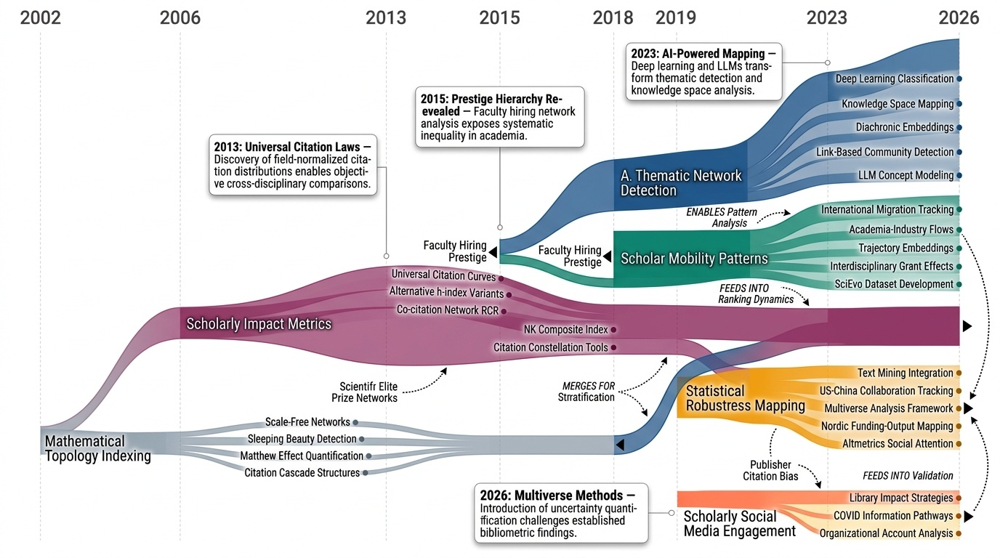

Science of Science — Paper Curation
Research Timeline

과학의 과학(Science of Science) 분야는 1964년 유진 가필드(Eugene Garfield)의 과학인용색인(Science Citation Index) 개발을 시작으로 과학 연구 자체를 정량적으로 분석하는 학문으로 발전해왔다. 초기에는 단순한 인용 분석과 네트워크 위상 연구에 집중했으나, 2005년 요안니디스(Ioannidis)의 "왜 발표된 연구 결과의 대부분이 거짓인가"라는 논문이 재현성 위기(Reproducibility Crisis)를 촉발하면서 과학 연구의 근본적 문제들이 주목받기 시작했다. 2010년대에 들어서면서 빅데이터와 기계학습 기술의 발전으로 대규모 계량서지학적 분석이 가능해졌고, 특히 2019년 타셰브스카야(Tshitoyan) 등이 Word2vec을 활용해 과학 문헌에 내재된 암묵적 지식을 추출할 수 있음을 보여준 연구는 AI 기반 과학 발견의 가능성을 열었다. 2020년 S2ORC 코퍼스가 8,110만 편의 논문을 공개하면서 전례 없는 규모의 계산 분석이 가능해졌고, 2022년 OpenAlex가 마이크로소프트 아카데믹 그래프를 대체하며 완전한 오픈 사이언스 인프라가 구축되었다. 2023년은 ChatGPT의 등장으로 과학 연구 방법론에 근본적 전환점을 맞았는데, 언어모델이 연구 작성과 가설 생성을 가속화하면서 동시에 의미적 참신성(Semantic Novelty)의 감소와 이해의 환상(Illusions of Understanding)이라는 새로운 문제를 야기했다. 현재 이 분야는 다섯 가지 주요 연구 영역으로 분화되어 있다. 첫째, AI 지원 과학 발견 분야는 인간 전문성을 통합한 AI가 예측 정확도를 400% 향상시킨 사례를 보여주며 자동화된 과학 발견의 가능성을 탐구하고 있다. 둘째, 학술 영향력과 이동성 연구는 2015년 클라셋(Clauset) 등이 밝힌 대학 간 위계 구조와 2026년 도입된 다중우주 분석(Multiverse Analysis)을 통해 계량서지학적 발견의 강건성을 검증하고 있다. 셋째, 계산 계량서지학 분석은 전통적 인용 네트워크 분석에서 대규모 언어모델과 지식 그래프를 결합한 다중 에이전트 시스템으로 진화했다. 넷째, 오픈 액세스 출판 분석은 2018년 전체 문헌의 28%가 오픈 액세스로 확인되고 18%의 인용 이점이 검증되면서 학술 출판의 패러다임 전환을 추적하고 있다. 다섯째, 과학 정책과 연구 역학 분야는 성별 인용 불균형, 팀 과학의 부상, 파괴적 혁신의 감소 등 현대 과학의 구조적 문제를 다루고 있다. 특히 2023년 박과 동료들이 발견한 과학과 기술 분야의 파괴성 지수(Disruption Index) 감소는 현대 과학이 점진적 개선에 치중하고 있음을 보여준다. 향후 이 분야는 AI가 과학적 이해를 능가하는 속도로 발견을 자동화하는 "과학 이후 시대(After Science Era)"의 도래, 연구 재현성과 검증 병목 현상의 심화, 그리고 인간-AI 협업 프레임워크 개발이라는 세 가지 핵심 과제에 직면해 있다. 2026년 현재 과학의 과학은 단순한 측정과 분석을 넘어 AI 시대 과학 연구의 본질과 미래를 재정의하는 중요한 전환점에 서 있다.
Research Insights 5 findings

Category Overview
AI-Assisted Scientific Discovery 카테고리는 인공지능이 과학 연구의 전 과정에서 어떻게 활용되고 있는지를 다루는 27편의 논문으로 구성되어 있습니다. 이 카테고리는 대규모 언어모델(Large Language Models)과 파운데이션 모델(Foundation Models)을 활용한 과학 논문 분석, 가설 자동 생성, 그리고 과학 정책 연계 등 다양한 응용을 포함합니다[1065][1072][1073]. 재료 과학, 촉매 연구, 생의학 분야에서의 데이터 기반 예측과 고처리량 계산(High-Throughput Prediction)도 중요한 주제이며[1070][1075][1082], 학생의 학습 경로 강화와 창의성 재정의 같은 교육적 함의도 탐구합니다[1113][1114]. 이 분야는 과학 메타연구(Metascience), 지식 그래프 구축(Knowledge Graph), 그리고 AI 도구의 윤리적 한계에 관한 비판적 논의도 포함하여 기술 발전과 함께 과학적 이해의 본질에 대한 질문을 제기합니다[1067][1068][1109][1112].
Public Profile Matters: A Scalable Integrated Approach to Recommend Citations in the Wild

 *Figure 2: The architecture of our two-stage citation recommendation system. (1) The non-learnable Profiler* 논문은 인용 추천 시스템에서 인간의 인용 행동 패턴(public profile)을 효율적으로 캡처하는 경량 모듈 Profiler와 적응형 벡터 게이팅을 통해 신뢰도 사전정보와 의미론적 정보를 통합하는 DAVINCI 모델을 제안하며, 현실적인 귀납적(inductive) 평가 설정을 도입하여 새로운 최첨단 성능을 달성한다.
논문은 인용 추천 시스템의 효율성, 편향 제거, 현실성을 동시에 개선하는 포괄적인 해결책을 제시하며, 특히 귀납적 평가 설정의 도입은 향후 연구의 평가 기준을 재정의하는 중요한 기여이다. Profiler의 경량성과 DAVINCI의 일반화 가능성은 실무 적용 가능성이 높다.
Sci2Pol: Evaluating and Fine-tuning LLMs on Scientific-to-Policy Brief Generation

Figure 1: Overview of Sci2Pol-Taxonomy and Dataset Source. (a) Sci2Pol-Taxonomy defines a
 *Figure 1: Overview of Sci2Pol-Taxonomy and Dataset Source. (a) Sci2Pol-Taxonomy defines a* 과학 논문을 정책 문서로 변환하는 LLM의 능력을 평가하고 개선하기 위해 벤치마크(Sci2Pol-Bench)와 학습 데이터셋(Sci2Pol-Corpus)을 제시한다.
과학과 정책 간의 중요한 격차를 해소하기 위한 최초의 전문화된 벤치마크와 데이터셋을 제시하며, 체계적 분류체계와 새로운 평가 메트릭을 통해 LLM의 한계를 명확히 규명하고 미세조정으로 성능 개선을 입증한 의미 있는 연구다.
Unsupervised Word Embeddings Capture Latent Knowledge from Materials Science Literature

Fig. 1 | Word2vec skip-gram and analogies. a, Target words ‘LiCoO2’
 *Fig. 1 | Word2vec skip-gram and analogies. a, Target words ‘LiCoO2’* 비지도 학습 방식의 Word2vec를 재료과학 문헌 330만 개 초록에 적용하여 화학적 지식을 명시적으로 부여하지 않고도 주기율표 구조와 물성-구조 관계 등 잠재 지식을 포착할 수 있음을 보여줌.
이 연구는 감독되지 않은 단어 임베딩으로 대규모 과학 문헌에서 숨겨진 재료과학 지식을 효과적으로 추출하며, 특히 미래 발견을 시간 경화된 방식으로 성공적으로 예측함으로써 과학 문헌 마이닝의 실제 가치를 입증하는 획기적인 사례를 제시한다.
Data-driven predictions in the science of science

Fig. 1. How unexpected is a discovery? Scientific discoveries vary in how unexpected they were relative to existing know
 *Fig. 1. How unexpected is a discovery? Scientific discoveries vary in how unexpected they were relative to existing know* 본 논문은 과학의 사회적 프로세스를 데이터 기반으로 분석하는 '과학의 과학(Science of Science)' 분야를 조사하고, 과학적 발견의 예측가능성에 대한 현황과 한계를 논의한다.
본 논문은 과학적 발견의 예측가능성에 관한 중요한 질문을 체계적으로 접근하되, 어떤 발견은 예측 가능하고 어떤 발견은 근본적으로 불예측적인지를 실증적으로 구분함으로써 과학 정책과 자원 배분에 실질적 통찰을 제공한다.
A Survey of AI Scientists

Figure 1:
 *Figure 1:* 본 논문은 2022-2025년 AI 과학자(AI Scientist) 시스템의 급속한 발전을 종합적으로 분석하며, 문헌 검토부터 논문 생성까지 6단계 방법론 프레임워크를 통해 자율적 과학 발견의 전체 워크플로우를 체계화한다.
본 논문은 AI 과학자라는 신흥 분야를 최초로 포괄적으로 종합한 중요한 리뷰 논문으로, 6단계 통합 프레임워크와 3단계 진화 모델을 통해 산재된 연구를 체계화하였다. 명확한 구조와 풍부한 사례 분석이 강점이나, 정량적 평가 메트릭 표준화와 실제 과학적 영향 검증이 강화되면 더욱 영향력 있는 기여가 될 수 있다.
Accelerating science with human-aware artificial intelligence

Fig. 1 | Motivation and design of our approach to simulate human-accessible
 *Fig. 1 | Motivation and design of our approach to simulate human-accessible* 과학자들의 전문성 분포를 AI 모델에 통합하면 미래 과학적 발견을 예측하는 능력이 최대 400% 향상되며, 이는 콘텐츠 기반 AI만으로는 놓치는 인간 중심의 과학 발전 메커니즘을 포착한다.
과학적 발견의 사회적·인지적 차원을 AI에 통합한 획기적 연구로, 기존 콘텐츠 기반 AI의 한계를 극복하고 미래 발견 예측의 정확도를 대폭 향상시킨다. 과학 가속화와 혁신적 발견 발굴 모두에 실질적 기여 가능성이 높다.
After science
AI가 과학의 모든 영역을 자동화하면서 인간의 이해(understanding)가 제어(control)를 따라가지 못하는 '과학 이후(after science)' 시대로 전환되고 있으며, 이 새로운 시대에 과학의 지속적 발전을 위해서는 AI에 호기심(curiosity)을 부여하고 방법론적 다양성을 보존해야 함을 주장한다.
이 논문은 AI가 과학을 지배하는 미래에 대한 정교한 철학적 진단을 제공하며, 호기심과 다양성을 통한 지속 가능성이라는 핵심 메시지를 설득력 있게 제시한다. 다만 기술적 실현 방안과 실증적 증거 보강이 시급하다.
Artificial intelligence and illusions of understanding in scientific research

Fig. 1 | Illusions of understanding in AI-driven scientific research. a, Scientists
 *Fig. 1 | Illusions of understanding in AI-driven scientific research. a, Scientists* AI 도구가 과학 연구에 광범위하게 도입될 때, 생산성과 객관성 향상을 약속하지만 실제로는 '이해의 환상(illusions of understanding)'을 야기하여 과학적 이해를 저해할 위험이 있다.
본 논문은 AI 시대 과학 연구의 인식론적 위험성을 다학제적 관점에서 통찰력 있게 분석하며, 기술 낙관주의를 넘어 책임 있는 지식 생산을 위한 중요한 개념적 틀을 제공한다. Nature의 Perspective로서 과학 정책과 커뮤니티 논의에 즉시적 영향을 미칠 만한 중요한 기여이다.
Challenges in High-Throughput Inorganic Materials Prediction and Autonomous Synthesis
고처리량 무기재료 자동 합성 및 예측 시스템의 핵심 문제점들을 분석한 관점 논문으로, Szymanski et al.의 A-lab 연구에서 43개 신규 재료 발견 주장이 신뢰할 수 없음을 지적하고 자동화된 재료 발견의 개선 방향을 제시한다.
본 관점 논문은 고처리량 재료 예측의 현주소와 한계를 날카롭게 분석하며, 자동화 시스템의 신뢰성 문제를 구체적 사례로 제시함으로써 학계에 중요한 경종을 울린다. 특히 무질서(disorder)의 중요성과 Rietveld 분석의 자동화 한계를 강조한 점은 향후 재료 발견 연구의 방향성을 크게 바꿀 수 있는 기여이다.
Data, measurement and empirical methods in the science of science

Fig. 1 | Science of science data and linkages. This figure presents commonly
 *Fig. 1 | Science of science data and linkages. This figure presents commonly* 과학의 과학(science of science) 분야에서 대규모 데이터셋, 측정 방법론, 실증적 연구 방법론을 종합적으로 리뷰하여 과학의 작동 방식과 과학적 진전을 이해하기 위한 실증적 접근법을 제시한다.
이 리뷰는 과학의 과학 분야의 급속한 발전을 체계적으로 정리하고, 분절된 학문 공동체를 한데 모으는 중요한 교량 역할을 한다. 데이터, 측정, 방법론의 삼각형 구조로 접근하여 이해도를 높이고, 과학 정책과의 실질적 연계를 강조함으로써 학술적 엄밀성과 실용적 가치를 모두 추구한다.
Embracing Foundation Models for Advancing Scientific Discovery

Fig. 1. An overview of our proposed KG-CoI for knowledge-grounded hypothesis generation. “KG-R” and “Lit-R” are retrieve
 *Fig. 1. An overview of our proposed KG-CoI for knowledge-grounded hypothesis generation. “KG-R” and “Lit-R” are retrieve* 본 논문은 기초 모델(Foundation Models), 특히 대규모 언어 모델(LLM)을 과학 발견에 활용하기 위해 지식-기반 아이디어 사슬(KG-CoI) 방법론과 IdeaBench 벤치마크를 제안한다.
본 논문은 Foundation Models을 과학 발견에 통합하기 위한 명확한 비전과 실행 가능한 프레임워크를 제시하며, 특히 KG-CoI와 IdeaBench는 인간-AI 협력 시대의 과학 연구 방식을 혁신할 수 있는 중요한 기여다. 다만 실증적 평가와 구체적인 구현 세부사항이 추가되면 더욱 강력한 연구가 될 수 있다.
MOLIERE: Automatic Biomedical Hypothesis Generation System

 *Figure 2: MOLIERE network construction pipeline.* MEDLINE의 24.5백만 개 문서로부터 구축한 대규모 생의학 지식 네트워크를 이용하여 자동으로 숨겨진 개념 간의 연결을 발견하고 가설을 생성하는 시스템이다.
MOLIERE는 전체 MEDLINE 데이터셋을 활용한 첫 대규모 가설 생성 시스템으로서, 기존 연구의 도메인 제약을 극복하고 오픈소스 및 온라인 서비스 제공으로 학계에 실질적인 기여를 한다. 다만 평가 방식의 보완과 실제 발견의 임상적 검증이 향후 과제이다.
OLMo: Accelerating the Science of Language Models

Figure 1: Accuracy score progression of OLMo-7B on 8 core end-tasks score from Catwalk evaluation suite
 *Figure 1: Accuracy score progression of OLMo-7B on 8 core end-tasks score from Catwalk evaluation suite* OLMo는 완전히 공개된 언어 모델로 학습 데이터, 훈련 코드, 평가 코드를 모두 함께 공개하여 언어 모델에 대한 과학적 연구를 가능하게 한다.
OLMo는 완전한 개방성과 투명성을 바탕으로 언어 모델 연구의 새로운 표준을 제시하며, 과학적 재현성과 커뮤니티 혁신을 크게 가능하게 하는 중요한 기여이다.
Open Catalyst 2020 (OC20) Dataset and Community Challenges

Figure 1: Adsorbates, materials, calculations,
 *Figure 1: Adsorbates, materials, calculations,* 촉매 발견을 위한 1.2백만 개의 DFT 계산 데이터로 구성된 Open Catalyst 2020 (OC20) 데이터셋을 제시하고, 그래프 신경망 기반 베이스라인 모델과 커뮤니티 챌린지를 제공한다.
OC20은 촉매 분야의 머신러닝 연구를 획기적으로 촉진할 수 있는 대규모 고품질 데이터셋으로, 명확한 작업 정의, 공개 자원, 커뮤니티 챌린지를 통해 재생에너지 촉매 발견의 가속화에 중요한 기여를 한다.
Quantifying large language model usage in scientific papers

Fig. 1 | Estimated fraction of LLM-modified sentences across research paper
 *Fig. 1 | Estimated fraction of LLM-modified sentences across research paper* 2020년 1월부터 2024년 9월까지 112만여 개의 학술논문을 분석하여 대규모언어모델(LLM, Large Language Model)의 사용 비율을 단어빈도 변화 기반 모집단 수준 프레임워크로 정량화한 연구이다.
학술 출판에서 LLM 사용의 실제 규모를 처음으로 정량화한 중요한 연구로, 모집단 수준의 통계적 방법론으로 개별 탐지의 한계를 극복했다. 분야별 차등적 채택 패턴과 저자 특성 간의 상관관계 규명을 통해 학술 커뮤니케이션의 구조적 변화를 이해하는 데 기여할 수 있으나, LLM 사용이 논문의 실제 품질과 신뢰성에 미치는 영향에 대한 심층 분석은 향후 과제이다.
The Open Catalyst 2022 (OC22) Dataset and Challenges for Oxide Electrocatalysts

Figure 1: Adsorbates, materials, calculations,
 *Figure 1: Adsorbates, materials, calculations,* 1.2백만 개 이상의 DFT 계산을 포함한 Open Catalyst 2020 (OC20) 데이터셋을 개발하여 산화물 전기촉매의 기계학습 모델 개발을 가능하게 했다.
이 연구는 촉매 과학 분야에 전례 없는 규모의 고품질 DFT 데이터셋을 제공함으로써 머신러닝 모델의 실질적 응용을 가능하게 하는 중요한 기여를 했으며, 공개 플랫폼과 명확한 벤치마크를 통해 커뮤니티 주도의 진전을 촉진했다.
A comprehensive large-scale biomedical knowledge graph for AI-powered data-driven biomedical research

 *Fig. 2 | Drug repurposing for COVID-19. a, The number of repurposed drugs,* PubMed의 모든 초록을 이용한 대규모 생의학 지식그래프(iKraph)를 구축하고, 확률론적 의미 추론(PSR)을 통해 간접 인과관계를 식별하여 약물 재위치 지정(drug repurposing)에 적용했다.
이 연구는 LitCoin 우승 파이프라인을 전체 PubMed 데이터에 적용하여 인간 수준의 정확도로 대규모 생의학 지식그래프를 최초로 구축하고, 확률론적 의미 추론으로 약물 재위치 지정에 성공한 중대한 기여다. 특히 전체 문헌 기반 엄격한 성능 평가가 가능해졌다는 점과 COVID-19 약물 발굴의 1/3이 임상 입증된 점이 실무적 가치를 입증한다.
CS-KG 2.0: A Large-scale Knowledge Graph of Computer Science

Fig. 1 The modules used to create our resource from the SCICERO52 pipeline.
 *Fig. 1 The modules used to create our resource from the SCICERO52 pipeline.* 150만 개의 컴퓨터과학 논문에서 자동 추출한 2,500만 개 엔티티와 6,700만 개 관계로 구성된 CS-KG 2.0 지식그래프를 제시하며, 이를 통해 연구 트렌드 분석, 가설 생성, 지능형 문헌 검색 등을 지원한다.
CS-KG 2.0은 자동화된 대규모 학술 지식그래프로서 기존의 한계를 상당 부분 극복하였으며, OpenAlex 기반의 지속 가능한 인프라와 시간 정보 통합을 통해 학술 문헌 분석 연구에 혁신적인 자원을 제공한다. 다만 시간 범위와 학문 분야 제한, 자동 추출의 정확성 개선이 필요하다.
Definition and Value Reconstruction of Human Creativity in the AI Era
AI 시대에 인간 창의성의 정의를 재구성하며, 전통적 창의성 평가 기준이 인간과 AI의 창의성 구분에 부적절함을 지적하고 3차원 창의성 평가 모델(보간형, 외삽형, 도약형)을 제안한다.
본 논문은 AI 시대의 창의성 개념을 근본적으로 재구성하며, 전통적 측정 기준의 한계를 명확히 지적하고 체계적인 3차원 평가 모델을 제안하여 인간의 창의적 가치를 재정립하는 데 기여한다. 다만 제안된 모델의 정량화 방법론 상세화와 다양한 영역에서의 실증적 검증이 추가로 필요하다.
GoAI: Enhancing AI Students' Learning Paths and Idea Generation via Graph of AI Ideas

Figure 1: The framework of GoAI. The framework consists of four stages: (1) Literature Search and Filtering, (2) GoAI Gr
 *Figure 1: The framework of GoAI. The framework consists of four stages: (1) Literature Search and Filtering, (2) GoAI Gr* GoAI는 AI 연구논문으로부터 교육용 지식그래프를 구축하고, 이를 활용하여 학생들의 개인화된 학습경로 계획과 창의적 아이디어 생성을 지원하는 도구이다.
GoAI는 교육학적 요구와 학술 네트워크의 복잡성을 동시에 다루는 혁신적 접근으로, 의미론적 지식그래프와 LLM의 결합을 통해 AI 학생들의 학습 효율성과 창의성을 실질적으로 향상시킬 수 있는 실용적 도구를 제시한다.
Harnessing the Power of Adversarial Prompting and Large Language Models for Robust Hypothesis Generation in Astronomy

Figure 1. This figure illustrates the adversarial in-context prompting workflow using OpenAI’s GPT-4 model. The procedur
 *Figure 2. Adversarial prompting and domain-specific context enrichment significantly enhance hypothesis generation quali* 본 연구는 GPT-4와 적대적 프롬프팅(adversarial prompting)을 활용하여 천문학 분야에서 가설 생성 능력을 향상시키는 방법을 제시한다. NASA 천체물리학 데이터시스템(ADS)의 1,000개 논문을 맥락 정보로 제공할 때 적대적 프롬프팅이 특히 효과적임을 보여준다.
본 연구는 적대적 프롬프팅과 도메인 맥락 검색을 결합하여 LLM의 과학적 가설 생성 능력을 체계적으로 향상시키는 혁신적인 방법론을 제시한다. 미세 조정 없이 저비용으로 도메인 특화 성능을 달성할 수 있음을 입증하여 과학 연구에서 LLM 활용의 새로운 가능성을 열어준다.
Human-Modeling in Sequential Decision-Making: An Analysis through the Lens of Human-Aware AI

Figure 1: A visualization of the three modes in which the
 *Figure 1: A visualization of the three modes in which the* 본 논문은 '인간-인식형 AI(Human-Aware AI)' 시스템의 개념을 정의하고, 순차적 의사결정(Sequential Decision-Making) 분야의 최근 연구를 체계적으로 분석하여 인간 모델링의 현황과 연구 공백을 파악한다.
본 논문은 혼용되던 'human-aware AI' 개념을 명확히 정의하고 체계적 분석 프레임워크를 제시하여 인간-AI 상호작용 연구의 이론적 기초를 제공한다. 순차적 의사결정 분야의 현황 분석을 통해 구체적 연구 공백을 식별함으로써 향후 연구 방향 설정에 실질적 기여를 한다.
A network approach to topic models

Fig. 1. Two approaches to extract information from collections of texts. Topic
 *Fig. 1. Two approaches to extract information from collections of texts. Topic* 텍스트 코퍼스를 문서-단어 이분 네트워크로 표현하여 토픽 모델링을 커뮤니티 탐지 문제로 재정의하고, 비모수 계층적 확률 블록 모델(hSBM)을 통해 LDA의 한계를 극복하는 통합 프레임워크를 제시한다.
이 논문은 토픽 모델링과 네트워크 커뮤니티 탐지 간의 깊은 수학적 관계를 형식화하고, LDA의 근본적 한계를 극복하는 원칙적인 비모수 베이지안 대안을 제시함으로써 두 분야의 교차 수렴을 실현한 의미 있는 연구이다.
AI-Driven Automation Can Become the Foundation of Next-Era Science of Science Research

 *Figure 2: An overview of the five progressively advancing levels of autonomy* 본 논문은 과학의 과학(Science of Science, SoS) 연구에 AI 기술을 통합하여 대규모 연구 패턴 자동 발견을 가능하게 하는 AI4SoS(AI for Science of Science) 프레임워크를 제안한다. 기존 통계 기반 방법론의 한계를 극복하고 자동화된 SoS 연구의 완전한 실현을 위한 5단계 자동화 계층을 제시한다.
본 논문은 SoS 연구에 AI를 체계적으로 통합하기 위한 프레임워크를 제시하는 선도적 작업으로, 명확한 개념 정의와 5단계 자동화 계층을 통해 차별화된 기여를 한다. 다만 구체적인 기술 구현과 대규모 검증이 필요하며, 개방된 과제들을 해결하기 위한 후속 연구가 중요하다.
Intersectional inequalities in science

미국 과학 인력의 교차적 불평등(intersectional inequalities)을 대규모 서지계량 분석으로 검증하여, 과학자의 정체성(race, gender)과 연구주제 선택 간의 상관관계와 이것이 인용도에 미치는 영향을 규명했다.
본 논문은 과학 인력 불평등 연구에 교차성 프레임워크를 도입하고 500만+ 논문의 대규모 서지계량 분석으로 정체성-주제-영향력의 복잡한 상호작용을 규명하여, 과학 정책과 제도 개선에 중요한 근거를 제공하는 높은 가치의 연구다.
Large teams develop and small teams disrupt science and technology

Fig. 1 | Quantifying disruption. a, Simplified illustration of disruption.
 *Fig. 2 | Small teams disrupt whereas large teams develop. a–c, For* 65백만 개 이상의 논문, 특허, 소프트웨어 제품 분석을 통해 소규모 팀은 과학기술을 혁신(disrupt)하고 대규모 팀은 기존 아이디어를 발전(develop)시킨다는 것을 입증했다.
팀 규모와 혁신성 관계에 대한 과학적 증거를 대규모 데이터로 처음 체계적으로 제시한 중요한 연구이며, 과학정책 수립에 직접적 함의를 제공한다. 다만 인과관계 규명과 분야별 메커니즘에 대한 추가 연구가 필요하다.
The Empowerment of Science of Science by Large Language Models: New Tools and Methods

Figure 1. Parameters and classification of notable LLMs
 *Figure 1. Parameters and classification of notable LLMs* 대규모언어모델(LLM)의 핵심 기술(프롬프트 엔지니어링, RAG, 파인튜닝 등)을 정리하고 과학계량학(SciSci) 분야에의 적용 가능성을 제시하는 종합 리뷰 논문이다.
본 논문은 LLM의 핵심 기술을 명확하게 정리하고 과학계량학의 미래 방향을 제시하는 가치 있는 리뷰이나, 제안된 적용 방법론들이 개념 수준에서 구체적 구현 사례와 검증 결과로 뒷받침되지 못하여 실제 임팩트 평가가 어렵다.

Category Overview
"Academic Impact and Mobility" 카테고리는 과학 생태계에서 연구자의 영향력(scholarly impact), 이동성(scholar mobility), 그리고 이를 측정하는 지표들을 종합적으로 탐구하는 39편의 논문으로 구성되어 있다. 연구비 배분의 불평등성[1036], 학자 간 협력 네트워크의 진화[960], 학술적 생산성과 환경의 관계[1000]를 다루면서, 장기적 과학적 영향[1003]과 인용 확산 패턴[1004]을 정량화하는 방법론들이 제시된다. 논문들은 기존의 성과 평가 체계를 재검토[1007]하고, 저널 인용 편향(publisher citation bias)[1008], 상대 인용 비율(Relative Citation Ratio)[1009], g-지수(g-index)[1047] 등 새로운 지표들의 타당성을 검증한다. 과학상 네트워크[1020], 대학 채용의 위계성[1026], 국제 과학 협력의 변화[1029]와 같은 거시적 현상들을 분석하면서, 텍스트 마이닝[1055]과 위상수학적 방법론(mathematical topology indexing)을 활용해 주제 진화와 경향을 추적한다. 궁극적으로 이 카테고리는 인용 분포의 보편성(universality of citation distributions)[1049]을 밝히고 학술 출판의 현재적 문제[1045]를 진단함으로써, 과학 측정과 평가의 객관성과 공정성을 확보하기 위한 다층적 접근을 제공한다.
- Thematic Network Detection: Thematic Network Detection는 과학 지식의 구조 변화와 주제 영역의 연결 관계를 탐지하는 연구 분야입니다. 이 분야는 과학 매핑(Science Mapping)과 네트워크 분석(Network Analysis) 기법을 활용하여 학제 간 연구 주제의 진화 과정과 학문 커뮤니티의 형성 메커니즘을 규명합니다[1013][986]. 연구자들은 인용 데이터(Citation Data)와 토픽 분석(Topic Analysis) 방법론을 통해 시공간적 맥락에서 과학적 개념의 변화를 모델링하고 지식 구조의 계층적 분류(Hierarchical Classification)를 수행합니다[1004][982]. 또한 머신러닝과 인공지능 기술을 활용한 위험 평가(Risk Assessment) 및 대규모 과학 커뮤니티 매핑(Community Mapping) 연구도 포함되며[1014][985], 이러한 접근법들은 과학적 지식의 동적 변화를 이해하고 미래의 연구 동향을 예측하는 데 중요한 역할을 합니다[989].
- Scholar Mobility Patterns: Scholar Mobility Patterns는 학자들의 이동과 이주가 학문적 성과에 미치는 영향을 다루는 연구 분야입니다. 이 분야는 학자들이 기관 간 또는 국가 간에 이동할 때 연구 생산성(research productivity)과 학문적 영향력(academic impact)이 어떻게 변화하는지를 분석합니다[973][967]. 특히 경제 발전 수준에 따른 국제적 학자 이주 패턴, 기관 간 이동이 과학적 성과에 미치는 영향, 그리고 학제 간 협력과 자금 지원이 학자의 생산성에 미치는 영향을 조사합니다[1000][975]. Scholar Mobility Patterns 연구는 학자의 환경 변화(academic environment change)가 혁신성 있는 연구(disruptive research)를 촉발할 수 있는지, 그리고 이것이 기술과 사회에 어떤 임팩트를 미치는지를 탐구하며, 학문 생태계 전반의 이동성과 생산성의 관계를 이해하는 데 중요한 기여를 합니다[934].
- Scholarly Impact Metrics: 학술적 영향력을 측정하기 위한 지표 개발은 연구자의 기여도를 객관적으로 평가하는 데 있어 매우 중요한 역할을 합니다. 이 하위 범주는 인용(Citation) 기반의 다양한 메트릭스(Metrics)를 통해 과학적 영향력을 정량화하려는 노력을 다룹니다. [1003]에서는 장기간의 과학적 영향을 측정하는 방법론을 제시하며, [1009]에서는 인용 비율을 활용한 새로운 지표인 상대인용비(Relative Citation Ratio)를 소개합니다. [1007]과 [1049]는 각각 학술 성과를 재정의하고 인용 분포의 보편성(Universality)을 규명함으로써 기존 평가 체계의 한계를 극복하고자 합니다. [1056]에서는 인용-별자리(Citation-Constellation) 개념을 통해 인용의 출처를 추적하여 더욱 정교한 영향력 분석을 가능하게 합니다. 이러한 다양한 접근 방식들은 연구 평가의 신뢰성과 타당성을 향상시키는 데 기여합니다.
- Statistical Robustness Mapping: Statistical Robustness Mapping은 학술 영향력과 이동성 분석에서 통계적 견고성을 평가하는 방법론을 다루는 세부 분야입니다. 이 분야의 연구들은 bibliometric 분석과 과학 매핑(science mapping) 기법의 신뢰성을 검증하고, 다양한 통계적 접근방식을 통해 연구 결과의 견고성을 확보하는 방법을 제시합니다[1055]. Multiverse analysis와 같은 고급 통계 기법을 도입하여 기존 bibliometric 연구의 재현성(reproducibility)과 강건성(robustness)을 검증하는 시도가 이루어지고 있습니다[977]. 또한 연구 자금 지원과 산출 결과를 topic level에서 매핑(mapping)함으로써 정책 결정과 학술 협력의 효과성을 객관적으로 평가합니다[983]. 미국-중국 과학 협력의 변화 분석[1029]과 논문의 사회적 관심도 연구[954]처럼 다양한 학술 현상을 통계적으로 검증하는 연구들이 포함됩니다. 이러한 연구들은 학술 영향력 평가의 투명성과 신뢰성을 향상시키는 데 기여합니다.
- Mathematical Topology Indexing: Mathematical Topology Indexing는 과학 연구의 영향력과 이동성을 측정하는 수학적 방법론에 관한 분야입니다. 이 분야의 연구들은 과학자의 인용도(citation index)를 평가하는 g-index와 같은 지표 개발부터 시작하여 [1047], 과학 자금 배분에서의 Matthew effect(마태 효과) 현상을 분석하고 있습니다 [1036]. 또한 과학자 간 협력 네트워크의 진화(evolution of scientific collaboration network)를 추적하거나 [960], Sleeping Beauties(잠자는 숨은 진주) 같은 잠재적 우수 논문을 발굴하는 방법론을 제시합니다 [951]. 이러한 연구들은 과학 공동체 내 학자의 이동성(academic mobility)과 영향력 확산을 정량적으로 측정하고 예측하는 데 중요한 역할을 합니다.
- Scholarly Social Media Engagement: 학술적 영향력과 이동성(Academic Impact and Mobility) 카테고리의 학술 소셜 미디어 참여(Scholarly Social Media Engagement) 세부 분야는 연구자들이 소셜 미디어 플랫폼을 통해 학술 커뮤니케이션에 어떻게 참여하는지를 연구합니다. [942]에서는 도서관이 과학과 사회 간의 격차를 해소하는 역할을 수행하며, 이는 학술 정보의 대중적 확산을 위한 중요한 매개 기능을 보여줍니다. [974]는 온라인 과학 커뮤니케이션(online science communication)에서의 정보 경로(information pathways)를 분석하여 지식이 어떻게 전파되는지를 규명합니다. [994]에서는 학술 커뮤니케이션에 참여하는 조직 계정(organisational accounts)들의 역할을 조사함으로써, 기관 차원의 학술 정보 공유 활동이 연구의 가시성과 영향력 확대에 기여하는 방식을 탐색합니다. 이러한 연구들은 디지털 환경에서 학술 성과의 사회적 영향력(social impact)을 증진하는 새로운 커뮤니케이션 전략의 필요성을 강조합니다.
- Publisher Citation Bias: Publisher Citation Bias는 학술 출판 시스템에서 특정 학술지(journal)의 인용이 그 위신(prestige)에 따라 불균형하게 일어나는 현상을 의미한다. [1008]에서는 천문학 분야에서 저명한 학술지에 실린 논문들이 그렇지 않은 학술지의 논문들보다 더 많이 인용되는 경향을 분석했으며, 이는 과학적 질(quality)보다 발행처의 명성이 인용에 더 영향을 미칠 수 있음을 시사한다. [1045]는 과학 출판(scientific publishing)의 구조적 부담이 이러한 편향(bias)을 심화시키는 방식을 설명하며, 출판 시스템의 스트레인이 학자들의 인용 행태에 미치는 영향을 다룬다. 출판사 인용 편향은 새로운 연구자나 소규모 기관의 논문이 제대로 평가받지 못하는 문제로 이어지며, 결국 학술 생태계의 불평등을 강화한다. 이 문제를 해결하기 위해서는 오픈 액세스(open access) 확대와 학술평가 기준의 다원화가 필요하다.
- Scientific Prize Networks: 과학적 상(Scientific Prize) 네트워크는 학문 분야에서 우수한 연구자들의 인정과 이동 경로를 추적하는 연구 영역입니다. [1017]에서는 지식 경관(Knowledge Landscape) 속에서 과학이 어떻게 탐험적으로 진행되며 혁신적인 연구가 어떻게 발생하는지를 분석합니다. [1020]은 과학상 네트워크가 학문의 경계를 밀어붙이는 연구자들을 예측할 수 있는 효과적인 도구임을 보여줍니다. 이러한 연구들은 학술 성과(Academic Achievement)와 연구자의 이동성(Mobility)이 밀접하게 연결되어 있음을 시사합니다. 과학상 수상 이력과 협력 네트워크(Collaboration Network) 분석을 통해 미래의 고영향 연구자들을 식별할 수 있으며, 이는 학문 공동체의 발전 방향을 이해하는 데 중요한 역할을 합니다.
- Faculty Hiring Prestige: Faculty Hiring Prestige는 대학의 채용 관행에서 나타나는 위계적 구조와 불평등을 분석하는 연구 분야입니다. [1026]에서는 Faculty Hiring Network(교수 채용 네트워크)에서 체계적인 불평등과 위계가 어떻게 형성되고 유지되는지를 규명하고 있습니다. 이러한 연구들은 특정 대학의 평판(prestige)이 신규 교수 채용 결정에 미치는 영향력을 조사하며, [1037]에서 지적하듯이 일반적으로 받아들여진 교수 생산성(faculty productivity) 서사가 실제로는 오도적일 수 있음을 보여줍니다. Faculty Hiring Prestige에 대한 연구는 학술 기관 간의 위계적 불평등이 어떻게 강화되는지, 그리고 이것이 학문 생태계에 미치는 부정적 영향을 드러내는 데 중요한 역할을 합니다. 궁극적으로 이 분야는 교수진 채용의 투명성과 공정성을 높이기 위한 개혁 방향을 제시하는 데 기여합니다.
- University Ranking Dynamics: # University Ranking Dynamics (2편) 대학 순위의 역학 관계를 이해하기 위해 궤적 데이터의 잠재 구조를 분석하는 비지도 학습 방법론이 활용되고 있다[1050]. 이러한 접근 방식은 대학의 학술적 위치 변화(academic mobility)를 시간에 따라 추적하고, 순위 변동의 숨겨진 패턴을 포착할 수 있게 한다. 동시에 구조적 역학(structural dynamics)에 기반한 과학적 성과 예측 모델은 대학의 미래 학술 영향력(academic impact)을 사전에 진단하는 데 중요한 역할을 한다[998]. 이러한 예측 기법들은 기관의 연구 생태계와 협력 네트워크의 특성을 분석함으로써 순위 상승 가능성을 평가한다. 결과적으로 데이터 기반의 추적 기술(trajectory analysis)과 예측 알고리즘은 대학 순위 변동의 원인을 체계적으로 규명하고, 고등교육 기관의 장기적 발전 전략 수립에 기여할 수 있다.
The Matthew effect in science funding

Fig. 1.
 *Fig. 1.* 본 연구는 네덜란드 과학 펀딩 데이터를 분석하여 초기 펀딩 성공이 이후 펀딩 획득 확률을 2.5배 이상 증가시키는 Matthew effect를 실증적으로 검증했다. 흥미롭게도 이러한 펀딩 격차는 부분적으로 초기 실패자들의 재신청 포기에 의해 발생하는 '참여 메커니즘'에 의해 주도된다.
본 연구는 인과추론 방법론과 풍부한 행정 데이터를 결합하여 학계의 오랜 이론을 실증적으로 검증하고, 특히 행동학적 '참여 메커니즘'이라는 새로운 설명 경로를 제시함으로써 과학 불평등 연구에 중요한 기여를 한다. 다만 단일 국가 데이터의 한계와 메커니즘의 부분적 설명력 수준은 추후 연구로 보완 필요하다.
Evolution of the social network of scientific collaborations
과학자들의 공동저자 네트워크를 1991-98년 수학 및 신경과학 데이터베이스를 통해 분석하여, 스케일-프리 네트워크 특성과 우선적 부착(preferential attachment)이 네트워크 진화를 지배함을 규명했다.
본 논문은 공동저자 네트워크의 동적 진화를 최초로 체계적으로 분석하여 우선적 부착과 스케일-프리 특성을 규명한 획기적 연구이며, 복잡 네트워크 이론의 발전과 다양한 사회-경제 시스템 연구에 중대한 기초를 제공했다.
Theory and Practice of the g-index
h-지수의 개선 버전인 g-지수를 제안하고, 상위 g개 논문이 함께 최소 g²개의 인용을 받은 최대 순위 g로 정의하여 상위 논문들의 인용 성과를 더 잘 반영한다.
본 논문은 인용 성과 측정의 중요한 지표인 h-지수의 명확한 한계를 식별하고, 수학적으로 엄밀하게 증명된 g-지수를 제안하여 scientometrics 분야에 실질적인 기여를 한다. 이론과 실제의 균형잡힌 제시가 뛰어나다.
Defining and identifying Sleeping Beauties in science
과학 논문 중 발표 후 수십 년간 인용되지 않다가 갑자기 높은 인용도를 보이는 '잠자는 미녀(Sleeping Beauty)' 현상을 정량화하는 매개변수 무관(parameter-free) 지표를 제시하고, 2천2백만 개 논문 분석으로 이 현상이 예외가 아닌 보편적 현상임을 규명했다.
본 논문은 과학적 영향력 평가의 기본 가정을 도전하는 중요한 실증 연구로서, 매개변수 무관의 우아한 정량 지표를 제시하고 대규모 다학제 데이터를 통해 지연된 인정이 보편적 현상임을 규명했다. 단기 인용 지표의 한계를 명확히 하고 향후 과학 평가 체계 개선을 위한 중요한 근거를 제공한다.
Productivity, prominence, and the effects of academic environment

 *Fig. 2.* 컴퓨터과학 분야 2,453명의 초기 경력 연구자를 대상으로 한 매칭 실험 설계를 통해, 박사 학위 취득 기관의 명성보다는 현재 근무 기관의 환경이 연구 생산성과 영향력을 결정하는 주요 요인임을 규명했다.
학계의 생산성 불평등이 개인의 능력이 아닌 기관 환경에서 비롯된다는 강력한 실증적 증거를 제시하며, 선발 효과와 환경 효과를 분리하는 새로운 방법론을 개발한 학술적으로 중요한 논문이다. 다만 단일 분야 분석의 한계가 있어 추가 검증이 필요하다.
SciEvo: A 2 Million, 30-Year Cross-disciplinary Dataset for Temporal Scientometric Analysis

Figure 1: Keyword trajectories reflect critical paradigm shifts in AI and epidemiology research over
 *Figure 1: Keyword trajectories reflect critical paradigm shifts in AI and epidemiology research over* arXiv의 210만 개 논문으로 구성된 30년 종단 scientometric 데이터셋(Scito2M)을 제시하고, 학문 용어 진화, 인용 패턴, 학제 간 지식 교류를 분석하여 기초 vs 응용 연구의 인식론적 차이를 규명한다.
Scito2M은 규모, 포괄성, 분석 깊이에서 scientometrics 분야의 주요 기여 자료이며, 학제별 인식론적 문화 차이를 정량적으로 규명한 새로운 통찰을 제공한다. 다만 데이터 편향성과 인용 정보의 완전성 개선이 필요하다.
Are disruptive papers more likely to impact technology and society?
거의 4천만 개의 논문을 분석하여 높은 CD index(파괴적 지수)를 가진 논문이 역설적으로 기술·사회 영향력이 낮다는 것을 발견했으며, 대신 '파괴적 인용(disruptive citation)' 지표가 더 강한 예측력을 가짐을 밝혔다.
파괴적 과학과 사회 영향력 간의 역설적 관계를 대규모 데이터로 최초 입증하고, 새로운 측정 지표를 제안하여 과학 평가 체계에 중요한 시사점을 제공한 우수한 논문이다. 다만 인과관계 규명과 문화적 편향 완화를 위한 후속 연구가 필요하다.
Global patterns of migration of scholars with economic development

 *Fig. 2.* Scopus 데이터베이스의 3,600만 논문 메타데이터를 활용하여 1998-2017년 전 세계 학자의 국제 이동 패턴을 분석하고, 경제 발전 수준에 따른 학자 이민의 U자형 관계를 발견했다.
이 연구는 대규모 서지학적 데이터를 혁신적으로 활용하여 학자 이동의 글로벌 패턴을 처음으로 종합적으로 규명했으며, 고숙련 전문가 집단이 일반 인구와 다른 이민 패턴을 보임을 입증함으로써 이동 이론의 중요한 차이를 드러냈다.
Impacts of inter-institutional mobility on scientific performance from research capital and social capital perspectives

Fig. 1 Regression model framework
 *Fig. 1 Regression model framework* 인공지능 분야에서 연구자의 학술기관-산업체 이동(aca.ind mobility)이 연구 성과에 미치는 영향을 연구 자본과 사회 자본 관점에서 분석한 논문으로, PSM 방법을 통해 인과관계를 규명한다.
본 연구는 PSM 방법으로 내생성을 해결하면서 개별 연구자 수준에서 학술-산업 이동의 차별화된 영향을 체계적으로 분석한 의미 있는 논문으로, 정책 입안자와 연구자 모두에게 실질적인 시사점을 제공한다.
Interdisciplinary papers supported by disciplinary grants garner deep and broad scientific impact

Fig. 1. Quantifying the level of interdisciplinarity of individual publications and grants. Major publication databases
 *Fig. 3. Impact of interdisciplinary papers as a function of grant interdisciplinarity. a) Interdisciplinary papers from * 350,000개 그랜트와 1.3백만 논문을 분석한 결과, 학제간 그랜트보다 학문 분야별(disciplinary) 그랜트가 지원한 학제간 논문이 더 높은 인용도를 보인다.
대규모 다국가 데이터와 혁신적인 측정 방법론을 통해 학제간 연구 펀딩의 역설적 효과를 실증적으로 규명한 중요한 연구이다. 과학 정책과 펀딩 전략 수립에 직접적인 함의를 제공한다.
Quantifying Long-term Scientific Impact

Figure 1: Characterizing citation dynamics. (A) Yearly citation ci(t) for 200
 *Figure 1: Characterizing citation dynamics. (A) Yearly citation ci(t) for 200* 논문은 인용 동역학(citation dynamics)의 보편적 메커니즘을 규명하여 서로 다른 저널과 학문 분야의 논문들을 단일 곡선으로 통합할 수 있음을 보여주고, 장기 과학적 영향력을 예측 가능하게 만드는 모델을 제시한다.
본 논문은 과학 계량학에서 수십 년간 미해결 과제인 개별 논문의 인용 패턴 예측 불가능성을 물리학 기반 동역학 모델로 해결하여, 과학적 영향력 평가의 패러다임을 전환한 획기적 연구다. 광범위한 실험적 검증과 높은 수학적 엄밀성으로 인해 학제 간 인용 비교와 공정한 과학 평가의 새로운 기초를 제공한다.
Redefining Academic Performance: The Development of the NK Composite Scholarly Performance Index
본 연구는 학술 성과 평가의 한계를 극복하기 위해 출판량, 인용 영향력, 경력 기간, 저자 기여도를 통합한 NK 지수(NK Composite Scholarly Performance Index)를 개발했다.
본 논문은 학술 성과 평가의 오랫동안 지적된 문제들을 종합적으로 해결하려는 의도 있는 연구로, 시간·기여도 조정 등 혁신적 요소를 포함하고 있다. 다만 구체적 수식, 실증 검증, 다학제 적용 사례 등이 보완되면 실무적 영향력이 크게 향상될 것으로 예상된다.
Relative Citation Ratio: A New Metric That Uses Citation Rates to Measure Influence at the Article Level

 *Fig 3. Algorithm for calculating the Relative Citation Ratio (RCR). (A) Article citation rate (ACR) is calculated as the* 논문은 공동인용 네트워크(co-citation network)를 활용하여 학문 분야를 정규화한 상대인용비율(RCR: Relative Citation Ratio)이라는 새로운 논문 영향력 측정 지표를 제안한다. 기존의 저널임팩트팩터(JIF)와 h-지수의 한계를 극복하기 위해 개별 논문 수준에서 인용 영향력을 측정할 수 있는 방법론을 제시한다.
본 논문은 공동인용 네트워크라는 혁신적 개념을 활용하여 분야 정규화와 벤치마킹을 동시에 해결하는 새로운 인용 지표를 제시함으로써, 오랫동안 문제시되어온 저널임팩트팩터의 오용을 실질적으로 극복할 수 있는 대안을 제공한다. 전문가 의견과의 강한 상관성 검증과 공개 웹 도구 제공을 통해 학술계의 광범위한 채택 가능성을 높였다.
Universality of citation distributions: Toward an objective measure of scientific impact

Figure 1: Normalized histogram of the number of articles
 *Figure 2: Rescaled probability distribution c0P(c, c0) of the* 다양한 학문분야의 논문 인용 분포가 상대지표 cf = c/c0로 정규화되면 보편적 곡선(universal curve)으로 수렴함을 보이며, 이를 기반으로 학문분야 간 과학적 영향력을 객관적으로 비교할 수 있는 방법을 제시한다.
상대지표 cf의 보편성을 엄밀하게 입증한 연구로, 학문분야 간 공정한 성과 평가를 위한 강력한 이론적 기초를 제공하며, 간결하면서도 일반성이 높은 접근법이 실용적 가치가 뛰어나다.
Where Do Your Citations Come From? Citation-Constellation: A Free, Open-Source, No-Code, and Auditable Tool for Citation Network Decomposition with Complementary BARON and HEROCON Scores

 *Figure 2: Score panel in both interfaces.* Citation-Constellation은 인용 네트워크의 사회구조적 경로를 분석하여 연구자의 인용 프로필을 분해하는 무료 오픈소스 도구로, BARON과 HEROCON 두 가지 상보적 지표를 제시한다.
이 논문은 이론적으로 확립된 인용 네트워크 분석 통찰을 실제 감사 가능하고 접근 가능한 도구로 변환한 중요한 기여이며, 특히 개방성과 투명성에 대한 강조와 글로벌 접근성 제고를 통해 책임감 있는 연구 평가 운동에 부합한다.
Quantifying spatial–temporal citation diffusion of individual papers in knowledge space
본 논문은 문서 표현 학습 알고리즘을 활용하여 지식공간(knowledge space)에서 개별 논문의 인용(citation)이 시간과 공간적으로 어떻게 확산되는지를 정량화한다. 초기 인용 확산 특성이 장기 인용 누적과 논문의 혁신성(novelty)·파괴성(disruptiveness)을 어떻게 결정하는지를 밝힌다.
본 논문은 지식공간에서 인용의 공간-시간 확산을 정량화하여 기존 시간적 중심의 인용 분석에 공간적 차원을 추가한 창의적 연구이다. 초기 확산 특성이 장기 영향과 혁신성을 좌우한다는 발견은 과학평가체계와 연구 영향 예측에 중요한 함의를 제공한다.
Rethinking Thematic Evolution in Science Mapping: An Integrated Framework for Longitudinal Analysis

 *Figure 5: Evolutionary graph.* 과학 지도 작성(Science Mapping)에서 종단 분석을 위한 구조적으로 통합된 프레임워크를 제시하여, 주제 탐지와 시간적 추적을 동일한 가중 관계형 네트워크 아키텍처 내에서 모델링한다.
이 연구는 과학 지도 작성의 종단 분석에서 구조적 불일치를 해결하기 위해 통합된 관계형 프레임워크를 제시하여, 방법론적 일관성과 해석적 견고성을 크게 향상시킨다. 실증 적용과 파라미터 일반화 연구가 보완된다면 과학계량학 분야의 중요한 기여가 될 것이다.
Risk and Artificial Intelligence Adoption: A Scientometric and Thematic Evolution Analysis Based on Scopus and Web of Science (1990-2025)
1990-2025년 Scopus와 Web of Science 데이터 기반 scientometric 분석을 통해 AI 도입(adoption) 연구에서 위험(risk)의 역할이 개별 지각적 억제요인에서 구조적 거버넌스 구성으로 진화했음을 규명한 연구이다.
본 연구는 AI 도입 연구에서 위험의 역할이 주변적 억제요인에서 중핵적 거버넌스 구성으로 재편된 과정을 scientometric 방법론으로 체계적으로 재구성함으로써, 이 분야의 지적·개념적·사회적 구조를 명확히 하였다. 다학제적 분산 문헌의 통합과 시간적 진화 추적을 통해 학술적 의의와 정책적 시의성을 모두 제시한 고품질 scientometric 연구이다.
Hierarchical Classification of Research Fields in the "Web of Science" Using Deep Learning
 *Fig. 3 Three-level hierarchical classification system.* 본 논문은 Microsoft Academic Graph의 1.6억 개 논문 초록을 이용하여 심층 신경망 기반의 계층적 분류 시스템을 개발하여 학술 출판물을 44개 학문분야(discipline), 718개 분야(field), 1,485개 세부분야(subfield)로 자동 분류하는 시스템을 제시한다.
본 논문은 대규모 학술 데이터에 기반하여 학문 간 불균형을 해소하는 통일된 계층적 분류 체계를 최초로 제시하였으며, 모듈화된 설계와 다중 레이블 지원으로 높은 실용성을 확보하였다. 90% 이상의 분류 정확도와 공개 자원 제공으로 학제간 연구 평가, 학문분야 분석 등 다양한 메타-과학 연구에 중대한 기여를 할 것으로 판단된다.
Mapping Knowledge: Topic Analysis of Science Locates Researchers in Disciplinary Landscape

Figure 1: Clustering of disciplinary topic portfolios. Hierarchical clustering with
 *Figure 2: Cloud of topics in the knowledge space. Scores of topics on principal* 과학 출판물의 의미론적 네트워크와 주제 모델링을 기반으로 연구자들의 인식론적 위치를 규명하는 새로운 좌표계를 제시한다. 주제 구성과 기하학적 데이터 분석을 결합하여 개별 연구자를 학문 지형 내에 위치시킨다.
Bourdieu 이론을 실증적으로 구현하면서 과학지도 제작의 methodological 전통을 통합하는 중요한 기여다. 방법론의 견고성과 정책 적용 가능성이 높으나, 국가 특수성과 언어 의존성의 한계를 극복하기 위한 확장 연구가 필요하다.
Mapping scientific communities at scale

Figure 1: Visualization of a network with VOSviewer.
 *Figure 1: Visualization of a network with VOSviewer.* 대규모 bibliometric 데이터셋에서 과학 공동체를 효율적으로 매핑하기 위해 노드 필터링 대신 링크 필터링에 기반한 새로운 방법론을 제시하고, Elasticsearch, Graphology, VOSviewer 등을 통합한 확장 가능한 네트워크 분석 프레임워크를 제안한다.
이 논문은 대규모 bibliometric 네트워크 분석의 기술적 한계를 링크 필터링 전략으로 우아하게 해결하고, 성숙한 기술 스택을 통해 실제 정책 도구로 구현함으로써 학술 매트릭스와 과학정책 간의 간극을 실질적으로 좁혔다. 오픈소스 공개와 web 기반 배포로 재사용성과 영향력이 높다.
Mapping the changing structure of science through diachronic periodical embeddings
학술지의 시간변화 임베딩(diachronic embedding)을 개발하여 과학 구조의 진화를 추적하고, 물리-생명-보건 삼각형 매핑을 통해 학제간 과학 경관의 변화를 정량화한다.
과학의 동적 구조 변화를 정량적으로 추적하는 혁신적인 방법론을 제시하며, 검증과 응용 사례를 통해 타당성을 입증한 견고한 연구다. 과학지도학과 과학정책 분야에 실질적 기여가 기대된다.
Modeling Changing Scientific Concepts with Complex Networks: A Case Study on the Chemical Revolution

Figure 1: Diachronic prototypical concepts. This
 *Figure 1: Diachronic prototypical concepts. This* LLM의 맥락 임베딩 대신 복잡 네트워크 기반 프레임워크를 사용하여 과학 개념의 시간적 변화를 해석 가능하게 모델링하며, 화학혁명의 플로지스톤(phlogiston) vs 산소(oxygen) 이론 경쟁 사례를 통해 개념 변화가 엔트로피(entropy)와 위상 밀도(topological density) 증가와 연관됨을 입증한다.
Digital Humanities와 NLP, 언어학을 교차학제적으로 결합하여 해석 가능하고 시간 인식적인 과학 개념 변화 분석 프레임워크를 제시하며, 화학혁명 사례에서 강력한 실증적 증거를 제공한다. 다만 단일 사례 분석 범위의 한계와 토픽 모델 의존성에 대한 추가 검증이 필요하다.
The altering landscape of US–China science collaboration: from convergence to divergence

 *Fig. 3 Change in the Collaboration Distance among the scientific* 본 논문은 bibliometric 데이터를 활용하여 미국-중국 과학 협력의 장기적 변화를 추적하며, 초기의 수렴(convergence) 단계에서 최근의 발산(divergence) 단계로의 전환을 실증적으로 분석했다.
본 논문은 OpenAlex 데이터와 다중 방법론을 활용하여 미국-중국 과학 협력의 동적 변화를 실증적으로 분석한 중요한 연구이며, 글로벌 과학 정책과 과학 외교 논의에 실질적인 근거를 제공한다.
When text mining meets science mapping in the bibliometric analysis: A review and future opportunities

Figure 1. The inclusion-exclusion flowchart of the review protocol.
 *Figure 3. The framework of the science mapping process.* 본 논문은 급증하는 과학 출판물을 효율적으로 분석하기 위해 텍스트 마이닝(Text Mining)과 과학 지도화(Science Mapping)를 결합한 서지학적 분석(Bibliometric Analysis) 방법론을 종합적으로 검토하고, 향후 연구 방향을 제시한다.
본 논문은 과학 지도화와 텍스트 마이닝의 통합이라는 중요한 주제를 체계적으로 검토하고, 엄격한 방법론으로 고품질 논문 37개를 선정하여 분석함으로써 서지학적 분석 분야의 발전에 기여한다. 다만 텍스트 마이닝 기법의 구체적 구현과 실증적 검증이 향후 과제로 남아있다.
Do novel papers attract more social attention?

Fig. 1. Distribution of paper by year published.
 *Fig. 2. Mean of Altmetrics of papers by whether they are classified as novel paper. AAScore represents the Altmetric Att* 본 연구는 310,000여 개의 경제경영학 논문을 대상으로 Altmetrics를 활용하여 혁신적(novel) 연구가 소셜 미디어 등 사회적 주목도를 더 크게 받는지 실증 분석했다.
본 연구는 혁신적 연구가 사회적 관심을 더 크게 받는다는 중요한 실증 증거를 제시하며, 과학-사회 간의 소통 강화와 연구 평가 체계 개선에 기여하는 의의 있는 연구이다.
Introducing multiverse analysis to bibliometrics: The case of team size effects on disruptive research

Figure 1 shows the range and the density of estimates from the multiverse of 180 equally
 *Figure 1 shows the range and the density of estimates from the multiverse of 180 equally* 본 연구는 다중우주분석(multiverse analysis)을 문헌계량학에 도입하여 팀 규모가 파괴적 연구에 미치는 영향에 대한 모델 불확실성을 체계적으로 평가한다. Wu et al. (2019)의 '소규모 팀이 더 파괴적 연구를 생산한다'는 주장의 견고성을 재검토한다.
본 논문은 모델 불확실성이라는 실질적 문제를 문헌계량학에 처음 체계적으로 다루며, 다중우주분석이라는 강력한 방법론을 도입하여 연구 신뢰성과 투명성을 획기적으로 향상시킨다. Wu-Petersen 논쟁을 통해 실제 적용 사례를 제시함으로써 문헌계량학 연구의 표준 관행 개선에 중대한 기여를 한다.
Mapping Research Funding and Outputs at the Topic Level in the Nordic Countries
북유럽 지역에서 연구 자금과 학술 출판 수 및 인용도 간의 관계를 주제별 수준에서 매핑하여, 자금이 출판량을 증진하지만 인용 영향도(citation impact)는 보장하지 않음을 보여준다.
북유럽 지역의 연구 자금 효율성을 주제별로 분석한 실증적 연구로, 자금이 출판량을 증진하지만 인용 영향도는 보장하지 않는다는 중요한 정책적 함의를 제시한다. 다만 포스터 형식의 한계와 인과관계 규명을 위한 추가 분석이 필요하다.
Bridging the gap between science and society: Mapping libraries' strategies for engaging in the research impact process through semantic analysis

 *Figure 4. Research workflow diagram.* 본 연구는 영국 Research Excellence Framework (REF)의 465개 사례 분석을 통해 도서관이 과학 연구의 사회적 영향을 중개하는 구체적 전략 5가지를 의미론적 분석(LLM + BERTopic)으로 규명했다.
본 연구는 도서관의 연구 영향 중개 역할을 처음으로 대규모 실제 사례 기반으로 규명하여 이론적·실무적 기여가 크며, 하이브리드 텍스트 분석 기법의 적절한 활용으로 신뢰성을 확보했다. 다만 지역 특수성으로 인한 일반화 제한과 추가 이론적 심화가 필요하다.
Information Pathways in Online Science Communication: The Role of Platform Actors and News Media

Figure 1: Network of coordinated accounts based on co-
 *Figure 1: Network of coordinated accounts based on co-* COVID-19 팬데믹 사례를 통해 트위터, 뉴스미디어, 전문가 등 다양한 행위자들 간의 과학 정보 흐름을 분석하여, 합의 지지 전문가와 반대 입장 전문가 간의 정보 증폭 구조와 조직화된 네트워크의 역할을 규명했다.
본 연구는 온라인 과학 커뮤니케이션 생태계의 복합적 정보 경로와 조직화된 증폭 구조를 최초로 통합적으로 분석함으로써, 과학 합의 편향(consensus bias)과 반대파 증폭 메커니즘에 대한 중요한 실증적 증거를 제공한다. 특히 뉴스미디어가 소셜미디어 슈퍼스프레더의 후행자 역할을 한다는 발견은 정보 생태계의 위계 구조를 새롭게 조명한다.
Organisational accounts engaged in scholarly communication on Twitter: Patterns of presence, activity and engagement

Figure 1 presents the workflow used to identify organisational accounts that tweeted
 *Figure 2 shows the distribution of these accounts across the seven organisational* Twitter에서 학술 출판물을 논의하는 9,842개의 연구·정책 관련 기관 계정(Organisational accounts)을 식별하고 이들의 소셜 미디어 활동, 팔로워 기반, 참여 패턴을 분석한 연구.
본 연구는 학술 커뮤니케이션 분야에서 간과되었던 기관 계정의 중요성을 체계적으로 조명하며, 9,842개 규모의 개방형 데이터셋과 재현 가능한 방법론을 제공함으로써 altmetrics와 과학커뮤니케이션 연구에 의미 있는 기여를 한다. 다만 단일 플랫폼 기반 분석과 영향도 인과관계 규명의 제한이 있으나, 기관 유형별 차이화된 패턴 발견은 향후 정책 개발과 커뮤니케이션 전략 수립에 실질적 가치를 제공한다.
Reinforcing Prestige: Journal Citation Biases in Astronomy

Figure 1. Relative contribution of each journal to the total number of articles in the field (bar chart, left axis), com
 *Figure 1. Relative contribution of each journal to the total number of articles in the field (bar chart, left axis), com* 천문학 분야 255,000개 논문을 분석한 결과, 다학제 저널(Nature, Science)이 출판량 대비 9배까지 높은 인용을 받으며, 저널 자체의 명성이 논문의 질과 무관하게 인용 편향을 야기함을 보여줌.
본 연구는 대규모 데이터를 활용하여 천문학 분야의 저널 인용 편향을 처음으로 체계적으로 입증하고, 저널 명성이 논문 품질과 독립적으로 과학적 시각성(visibility)을 왜곡하는 메커니즘을 명확히 제시함으로써, 인용 기반 평가 지표의 오용 위험성을 경고하고 과학 평가의 공정성 개선에 중요한 근거를 제공한다.
The strain on scientific publishing

과학 논문 출판량이 2016년 대비 2022년에 47% 증가했으나 과학자 수는 정체되어 '출판 부담(strain on scientific publishing)'이 심화되고 있으며, 이를 정량적 지표로 분석한 연구이다.
과학 출판의 구조적 문제를 처음으로 체계적으로 정량화하고 출판사-자금제공자-연구자 간의 왜곡된 인센티브를 명확히 제시함으로써, 정책 입안자와 이해관계자들에게 실행 가능한 개선 방안을 제시하는 중요한 메타-연구이다.
Science as exploration in a knowledge landscape: tracing hotspots or seeking opportunity?

 *Figure 3 The aggregated inter-flow of scientists in the knowledge space under two types of tessellations* 본 논문은 지리정보시스템(GIS) 기법을 활용하여 과학자들의 연구주제 선택을 지식공간(knowledge space)에서의 탐색 과정으로 모델링하고, 과학자들이 주로 보수적으로 국소적 지식공간을 탐색하는 패턴을 실증적으로 규명한다.
본 논문은 GIS와 머신러닝을 활용하여 과학자의 주제 선택을 지식공간에서의 탐색으로 새롭게 모델링하고, 과학자들이 보수적으로 국소 영역을 탐색하며 혁신적 교집합 영역을 회피하는 경험적 증거를 제시함으로써 과학 생태계의 메커니즘 이해에 중요한 기여를 한다.
Scientific prize network predicts who pushes the boundaries of science

 *Fig. 2 The exponential distribution of scientific prizewinning. Plot and inset show* 3,000개 이상의 과학상(Scientific Prize)과 10,455명의 수상자 데이터를 분석하여 과학상 네트워크(Prize Network)가 과학의 경계를 확장하는 과학자들을 예측할 수 있음을 보여준다. 과학상의 집중도 증가와 학제 간 연결성이 과학의 엘리트 계층화와 지식 전파 경로를 드러낸다.
과학상 네트워크의 전역 구조를 최초로 정량 분석하여 과학의 계층화 메커니즘과 지식 전파 경로를 규명한 고도로 독창적이고 중요한 연구이다. 계보·공동저자 네트워크의 높은 예측력은 과학 엘리트의 형성이 개인 역량뿐 아니라 사회적 자본에도 크게 의존함을 시사하며, 과학정책과 과학사 연구에 실질적 기여를 한다.
Systematic inequality and hierarchy in faculty hiring networks

Fig. 1. Prestige hierarchies in faculty hiring networks. (Top) Placements for 267 computer science
 *Fig. 2. Inequality in faculty production. (A) Lorenz curves showing the fraction of* 대학원 졸업생의 교수 채용 네트워크를 분석하여 학계의 체계적 불평등과 계층 구조를 정량화하고, 박사 학위 기관의 명성(prestige)이 최종 배치를 더 잘 예측함을 보여줌.
학계의 불평등 구조를 처음으로 체계적으로 정량화하고, 명성(prestige)이 실제 채용 결정에 미치는 강력한 영향을 네트워크 분석으로 입증한 획기적 연구. 방법론은 우아하고 결과는 명확하지만, 시간적 동역학과 지역적 보편성 검증이 필요함.
The misleading narrative of the canonical faculty productivity trajectory
컴퓨터과학 분야 2,453명 교수의 200,000개 이상 논문 데이터를 분석하여, 생산성이 초기에 급상승 후 완만히 감소한다는 기존의 정설(canonical narrative)이 실제로는 약 20%의 교수에게만 해당되며, 나머지 80%는 다양한 생산성 패턴을 보임을 밝혔다.
이 논문은 학계에서 오랫동안 통용되던 생산성 정설을 포괄적 데이터로 검증하여 그 한계를 밝히고, 개인 수준의 다양한 궤적을 실증적으로 입증함으로써 학자 평가와 경력 관리에 대한 근본적인 인식 전환을 요구한다. 명확하고 철저한 분석으로 학계 정책 수립에 직접적인 영향을 미칠 수 있는 중요한 연구이다.
Unsupervised embedding of trajectories captures the latent structure of scientific migration

Fig. 1.
 *Fig. 1.* Word2vec 신경망 임베딩 모델을 이용하여 이동 궤적(migration trajectories)으로부터 지역 간의 잠재적 구조를 비지도학습으로 추출하고, 중력 모델(gravity model of mobility)과의 수학적 동치성을 증명한다. 과학자 300만 명의 이동 데이터에 적용하여 문화, 언어, 위신 등 다층적 요인을 포함한 과학 마이그레이션의 복잡한 구조를 효과적으로 인코딩할 수 있음을 보여준다.
이 논문은 신경망 임베딩과 전통 이동 모델의 수학적 동치성을 증명하고, 대규모 과학 마이그레이션 데이터에 적용하여 방법론적 정당성과 실용적 유용성을 모두 입증한다. 이론적 깊이와 실증적 규모, 도메인 외 적용 가능성을 종합하면, 마이그레이션 연구의 패러다임 전환을 제시하는 매우 가치 있는 기여다.
Predicting Scientific Breakthroughs Based on Structural Dynamic of Citation Cascades

 *Figure 4. The new approach proposed in this study to constructing citation cascade networks for* 본 논문은 인용 네트워크의 동적 구조 진화 특성을 포착하여 과학적 돌파구 논문을 예측하는 새로운 방법을 제안한다. 시간 순서대로 구성된 인용 캐스케이드(citation cascade)의 구조 지표 궤적을 동적 예측자로 활용한다.
본 논문은 인용 네트워크 분석에 동적 관점을 도입하여 과학적 돌파구 예측의 성능을 유의미하게 개선했다. 시간 순서 인용 캐스케이드 구성이라는 메서드론적 혁신과 이론적 확장성은 우수하나, 데이터셋 제한과 실무 적용 가능성 검증에서 추가 연구가 필요하다.

Category Overview
Computational Bibliometric Analysis 카테고리는 학술 출판의 대규모 데이터를 자동화된 방법으로 분석하는 19편의 연구를 포함하고 있습니다. 이 분야는 오픈 소스 데이터베이스와 소프트웨어 도구들 [1015][1024][939][993]을 통해 과학 논문과 저자, 기관 간의 복잡한 관계를 체계적으로 매핑하고 시각화하는 방법론을 다룹니다. 과학 지도 제작(Science Mapping) [1018][1054][978]과 인용 분석(Citation Analysis) [944][1053]을 포함한 핵심 기법들은 연구 분야의 구조를 파악하고 지식 조직 체계(Knowledge Organization Systems)를 설계하는 데 활용됩니다 [930][952]. 또한 머신러닝과 신경망을 활용한 예측 모델들 [1076][962][963]은 향후 연구 트렌드와 고임팩트 연구 주제를 조기에 식별하는 데 기여하며, 자금 지원과 연구 산출의 연계 분석 [980]과 같은 과학 정책 연구도 포함합니다. 이러한 계산 기반 분석 방법들은 ChatGPT 같은 AI 도구의 평가 한계 [1057]와 다중 에이전트 시스템을 활용한 연구 발견 플랫폼 [1118] 개발에도 응용되고 있습니다.
S2ORC: The Semantic Scholar Open Research Corpus

Figure 1: Inline citations and references to figures and
 *Figure 1: Inline citations and references to figures and* 81.1M 학술 논문의 메타데이터, 초록, 인용 정보와 8.1M 오픈 액세스 논문의 구조화된 전체 텍스트를 포함하는 대규모 공개 학술 코퍼스(S2ORC)를 소개한다.
S2ORC는 학술 텍스트에 대한 기존 코퍼스의 규모, 구조화, 학제 간 포괄성의 한계를 획기적으로 극복하는 대규모 공개 자원으로, NLP 및 문헌 분석 연구에 지대한 기여를 할 것으로 예상된다.
Science Mapping and Science Maps

Figure 1. Example of citation network. Nodes represent document and ar-
 *Figure 1. Example of citation network. Nodes represent document and ar-* 과학 지도(Science Maps)는 학술 지식의 구조와 동역학을 시각적으로 표현하는 방법론으로, 인용 네트워크(Citation Networks)와 용어 공동 출현(Term Co-occurrence) 기반의 다양한 매핑 기법들을 체계적으로 소개한다.
이 논문은 과학 지도 방법론에 대한 포괄적이고 체계적인 입문서로서, 산재된 기술과 개념들을 명확한 워크플로우로 통합하고 인식론적·사회학적 기초를 제시함으로써 지식조직화와 과학 정책 분야에서의 활용성을 크게 높인다. 다만 수학적 형식화 부재와 실제 사례 분석의 부족은 고급 실무자들을 위한 보충 자료의 필요성을 시사한다.
Software survey: VOSviewer, a computer program for bibliometric mapping

 *Fig. 3 Screenshot of the main window of VOSviewer* VOSviewer는 서지학적 지도(bibliometric map)를 구성하고 시각화하기 위한 무료 컴퓨터 프로그램으로, 특히 대규모 지도의 그래픽 표현에 특화되어 있다.
VOSviewer는 대규모 서지학적 지도의 시각화 문제를 효과적으로 해결하고 무료로 공개된 도구로서 학술 커뮤니티에 실질적인 기여를 한다. VOS 기법과 고급 인터랙티브 기능의 통합으로 기존 도구의 한계를 극복하였으나, 기술적 혁신성보다는 기존 기법의 효과적인 구현에 주력한 점이 특징이다.
The chaperone effect in scientific publishing

Fig. 1. Probability of being listed as PI in Nature given previous publication history. a, Terminology of authors. The l
 *Fig. 1. Probability of being listed as PI in Nature given previous publication history. a, Terminology of authors. The l* 과학 논문 출판에서 경험 많은 과학자(선임저자)가 특정 저널에 이전 경험이 있을 때 더 높은 출판 성공률을 보이는 '샤페론 효과(chaperone effect)'를 정량적으로 분석한 연구이다.
과학 출판의 숨겨진 메커니즘인 '샤페론 효과'를 대규모 데이터로 처음 정량화한 중요한 연구로, 과학자 경력 발전과 학문적 우수성 전승에 대한 새로운 통찰을 제공한다. 결과의 명확성과 실증적 증거가 강력하며, 과학정책 및 학문 공동체의 개선에 실질적 기여할 수 있다.
Visualizing the context of citations referencing papers published by Eugene Garfield: a new type of keyword co-occurrence analysis

 *Fig. 3 Co-occurrence of keywords in citation contexts of papers referencing Eugene Garfield* Eugene Garfield의 논문들을 인용한 문헌들의 인용 맥락(citation context)을 이용하여 키워드 동시출현 네트워크(keyword co-occurrence network)를 구성하는 새로운 유형의 계량분석 방법론을 제시하고, 이를 제목/초록 기반 네트워크와 비교 분석한다.
인용 맥락을 활용한 새로운 유형의 계량분석 방법론을 제시하고, 대규모 자동화 분석이 가능함을 보여주었으나, 샘플 크기 제한과 일반화 검증이 필요하다. 계량분석 분야에 개념적 기여는 높으나 실증적 범위는 제한적이다.
What's In Your Field? Mapping Scientific Research with Knowledge Graphs and Large Language Models

Figure 1: Illustration of the structured concept extraction pipeline: i) the corpus used, ii) running optimized prompt
 *Figure 1: Illustration of the structured concept extraction pipeline: i) the corpus used, ii) running optimized prompt* LLM과 구조화된 지식 그래프(Knowledge Graph)를 결합하여 30,000개의 과학 논문에서 자동으로 개념을 추출하고 분석하는 시스템을 제시합니다. 이를 통해 과학 분야 전반의 동향을 추적하고 체계적으로 문헌을 탐색할 수 있습니다.
본 논문은 LLM의 의미 이해 능력과 구조화된 지식 표현을 결합하여 대규모 과학 문헌의 체계적 분석을 가능하게 하는 실용적이고 확장 가능한 시스템을 제시합니다. 비록 추출 정확도는 개선의 여지가 있으나, 최소한의 주석으로 범용적 스키마를 설계하고 대규모 코퍼스에 적용한 점에서 높은 학술적 가치와 실무적 활용 가능성을 보여줍니다.
Which stylistic features fool ChatGPT research evaluations?
ChatGPT는 추상(abstract)의 언어적 복잡성과 길이에 과도하게 반응하여 연구 품질을 평가하는데, 이는 인간 전문가의 평가와 달리 스타일 편향(stylistic bias)을 보인다.
LLM의 스타일 편향을 대규모 실증 데이터로 처음 규명한 중요한 연구로, 연구 평가 시스템의 신뢰성 문제를 제기하고 향후 LLM 개선 방향을 제시한다.
Predicting research trends with semantic and neural networks with an application in quantum physics

Fig. 1.
 *Fig. 1.* 750,000개의 과학 논문으로부터 의미론적 네트워크(SemNet)를 구축하고 신경망을 이용해 양자물리학의 미래 연구 트렌드를 예측하며, 개인화된 혁신적 아이디어를 제시하는 방법을 개발했다.
과학 문헌의 대규모 의미론적 네트워크 분석과 신경망 기반 예측을 결합하여 연구 트렌드 예측과 개인화된 혁신 아이디어 제시라는 새로운 가능성을 열었으며, 급성장하는 양자물리학에 성공적으로 적용하여 컴퓨터 지원 과학(computer-inspired science)의 실질적 기여를 입증한 의미 있는 연구이다.
Paper Circle: An Open-source Multi-agent Research Discovery and Analysis Framework

Figure 1: Overview of the Paper Circle pipeline. Given a user query, Paper Circle builds a paper set from multiple
 *Figure 1: Overview of the Paper Circle pipeline. Given a user query, Paper Circle builds a paper set from multiple* Paper Circle는 학술 문헌 발견과 분석을 위한 다중 에이전트 LLM 기반 프레임워크로, Discovery Pipeline과 Analysis Pipeline을 통해 논문 검색, 평가, 구조화된 지식 그래프 생성을 자동화한다.
Paper Circle는 학술 문헌 발견과 분석을 위한 포괄적이고 실용적인 다중 에이전트 시스템으로, 재현 가능성과 구조화된 출력을 강조하며 인간 연구자를 증강하는 협업 플랫폼으로서 명확한 가치를 제시한다.
A Survey on Knowledge Organization Systems of Research Fields: Resources and Challenges

 *Figure 2. The aspects and features used for the analysis of Knowledge Organization Systems.* 본 논문은 학술 분야의 지식 조직 체계(Knowledge Organization Systems, KOS) 45개를 scope, structure, curation, usage, links 등 5가지 차원으로 분석하여 현황을 파악하고 통합 솔루션의 필요성을 제시한다.
본 논문은 학술 분야 KOS에 대한 최초의 체계적 대규모 조사로서, 현재 학술 정보 조직의 이질성을 명확히 규명하고 통합 솔루션의 필요성을 강하게 제시한다. 오픈사이언스 원칙에 따라 데이터와 코드를 공개하여 추후 연구의 기초가 될 수 있는 중요한 기여이나, KOS 선정 기준 명확화와 사용 현황 데이터 수집 강화가 필요하다.
BibFusion: A Python package to integrate, deduplicate, and harmonize exported bibliographic records from Scopus and Web of Science for bibliometric analysis

Figure 1 provides a synopsis of the end-to-end
 *Figure 2 presents the unified ER model of the* BibFusion은 Scopus와 Web of Science의 서지 데이터를 통합, 중복 제거 및 조화(harmonize)하여 서지계량 분석에 활용할 수 있는 Python 패키지이다. DOI 기반 식별자와 메타데이터 정규화를 통해 분석 준비된 통합 말뭉치를 제공한다.
BibFusion은 Scopus-WoS 통합의 구조적 문제(중복, 저자 불일치, 소속 불완정)를 해결하는 재현 가능하고 감사 가능한 Python 패키지로, 관계형 데이터 모델과 명시적 아티팩트를 통해 기존 도구의 한계를 넘어선다. 실제 entrepreneurial marketing 사례(436→253 고유 저작, 8,569 논문)로 효과성을 입증했으며, 과학계량 연구의 데이터 전처리 표준화에 기여할 잠재력이 높다.
Co‐citation analysis, bibliographic coupling, and direct citation: Which citation approach represents the research front most accurately?
대규모 생의학 문헌(2004-2008, 215만 개 논문)을 이용하여 공인용분석(co-citation analysis), 서지적 결합(bibliographic coupling), 직접 인용(direct citation), 그리고 하이브리드 접근법의 4가지 유사성 기반 방법이 연구 최전선을 얼마나 정확하게 표현하는지 비교 평가했다.
대규모 코퍼스와 새로운 정확도 지표를 활용하여 citation 기반 science mapping 방법론의 상대적 성능을 처음으로 체계적으로 평가한 중요한 연구로, 생의학 분야의 포트폴리오 분석 등 실제 응용에 직접 활용 가능한 신뢰성 높은 결과를 제시했다.
Comparative science mapping: a novel conceptual structure analysis with metadata

Fig. 1 Analytical strategy for detecting and mapping the conceptual structure
 *Fig. 1 Analytical strategy for detecting and mapping the conceptual structure* 본 논문은 메타데이터(저자, 기관, 지역 등)를 활용하여 과학 논문의 개념 구조(conceptual structure)를 분석하는 혁신적인 과학 매핑(science mapping) 기법을 제안하고, 이탈리아 학술의료센터(AMCs)의 종양학 연구를 비교 분석한다.
본 논문은 메타데이터를 활용한 혁신적 과학 매핑 기법을 제안하여 여러 연구 기관의 개념 구조를 통합적으로 비교할 수 있는 실질적인 분석 도구를 제공한다. 실증적 사례를 통해 학술 기관과 정책 입안자의 의사결정을 지원하는 높은 실용적 가치를 입증하였다.
Design and Update of a Classification System: The UCSD Map of Science

Figure 1. Visualizations of the UCSD Map: 2D Mercator projection (left) with three 3D spherical insets (top), 1D circula
 *Figure 1. Visualizations of the UCSD Map: 2D Mercator projection (left) with three 3D spherical insets (top), 1D circula* UCSD Map of Science의 설계 및 업데이트를 통해 과학 분류 체계(classification system)를 구축하고, 원본 5년 데이터에서 10년 데이터로 확장하여 저널 매핑 정확도와 사용성을 향상시켰다.
본 연구는 광범위하게 활용되는 과학 지도를 최초로 체계적으로 업데이트하여 저널 매핑의 정확도와 학문 분야 커버리지를 크게 향상시켰으며, 다양한 이해관계자의 지식 탐색과 의사결정을 지원하는 중요한 기초 자원을 제공한다.
Forecasting high-impact research topics via machine learning on evolving knowledge graphs
21백만 개 과학논문으로부터 구축한 진화하는 지식그래프(evolving knowledge graph)와 머신러닝을 활용하여, 아직 발표되지 않은 새로운 연구 아이디어의 미래 임팩트를 미리 예측하는 방법을 개발했다.
미발표 연구 아이디어의 미래 임팩트를 예측하는 혁신적 접근법으로, 대규모 지식그래프와 머신러닝을 결합하여 높은 정확도를 달성했다. 과학 지원 AI 시스템의 새로운 패러다임을 제시하는 중요한 기여이나, 도메인 확장성과 인용도 기반의 임팩트 평가 한계 개선이 필요하다.
Forecasting the future of artificial intelligence with machine learning-based link prediction in an exponentially growing knowledge network

 *Fig. 2 | From arXiv to Science4Cast. Utilizing 143,000 AI and ML papers on* 143,000개의 AI 논문으로부터 64,000개 개념노드의 의미 네트워크를 구축하고, 머신러닝 기반 링크 예측을 통해 미래의 AI 연구 방향을 예측하는 Science4Cast 벤치마크를 제시한다.
이 논문은 지수적으로 증가하는 AI 문헌에서 의미 있는 연구 방향을 예측하기 위해 대규모 의미 네트워크와 링크 예측 기법을 결합한 혁신적 접근을 제시한다. 수작업 특성이 자동 학습을 능가한다는 발견은 향후 더 나은 순수 ML 방법 개발의 가능성을 시사하며, 공개 벤치마크와 방법 제공으로 학계에 상당한 기여할 것으로 기대된다.
Introducing the open biomedical map of science
PubMed 인용 데이터베이스를 활용하여 개방형 생의학 과학 지도(OBMS)를 개발하는 진행 중인 연구로, 저널과 MeSH 기술어(Medical Subject Heading) 간의 이중양식 네트워크 관계를 시각화한다.
본 연구는 완전 개방형 데이터와 개방 표준만으로 FAIR 원칙을 준수하는 과학 지도 개발의 가능성을 제시하며, 저널-기술어 이중양식 네트워크라는 혁신적 접근으로 과학 구조를 새롭게 표현한다. 다만 PubMed의 학제 편향성과 프로토타입 수준의 한계를 극복하기 위한 추가 개선과 검증이 필요하다.
Linking Global Science Funding to Research Publications

 *Figure 2: Overview of the funder name disambiguation pipeline.* 7.4백만 개의 펀딩 인정(funding acknowledgment) 문자열을 체계적으로 정규화하고 1.9백만 개를 표준 조직 식별자에 매칭하여 글로벌 과학 펀딩과 연구 출판물을 연결하는 대규모 데이터셋을 구축했다.
이 논문은 글로벌 과학 펀딩 데이터의 단편화 문제를 체계적으로 해결하고 투명한 정규화 파이프라인을 제시하여, 과학정책 연구와 펀딩 분석의 재현 가능성을 크게 향상시키는 중요한 데이터 인프라 기여이다.
OpenAlex: A fully-open index of scholarly works, authors, venues, institutions, and concepts

Figure 1: Sketch of the OpenAlex graph data model.
 *Figure 1: Sketch of the OpenAlex graph data model.* Microsoft Academic Graph 종료에 따라 학술 메타데이터의 완전 개방형(오픈 데이터, API, 소스코드) 대체 시스템으로 OpenAlex를 개발하였으며, 209M개 논문, 213M명 저자, 124K개 학술지 등 5개 엔티티 타입으로 구성된 학술 지식 그래프(Scientific Knowledge Graph)를 제공한다.
OpenAlex는 MAG 종료로 인한 학술 인프라 공백을 메우면서 완전 개방형 모델을 제시한 중요한 프로젝트로, 규모와 개방성 측면에서 획기적이나 초기 단계로 엔티티 정확도 및 데이터 완전성 개선이 시급하다.

Category Overview
# Open Access Publication Analytics 카테고리 개요 오픈 액세스(Open Access, OA) 출판 분석 카테고리는 학술 출판의 개방성, 접근성, 그리고 효율성에 관한 종합적인 연구를 다룬다. [1038]에서는 디지털 시대 학술 출판사의 과점 구조를 분석하고 있으며, [1044]는 오픈 액세스 출판물의 유병률과 특성을 대규모로 분석하고 있다. 학술 데이터베이스의 품질과 활용성 측면에서 [1115]는 Google Scholar, Microsoft Academic, Scopus, Dimensions, Web of Science 등 주요 플랫폼을 비교 분석하고, [992]는 OpenAlex의 메타데이터 품질을 평가하고 있다. 인용 영향력 분석과 관련하여 [932]는 오픈 액세스의 인용 이점을 실증적으로 분석하며, [968]은 현대 과학의 성장률을 서지학적 방법으로 검토하고 있다. 학제 간 융합 연구 동향을 파악하기 위해 [972]는 과학학(science of science) 분야의 학제 간 출현을 식별하고, [991]과 [997]은 각각 학습 분석(Learning Analytics) 분야의 오픈 데이터셋 현황과 인도의 고분자 과학 연구를 scientometrics 기법으로 분석하고 있다. 추가로 [1006]은 미국 인플레이션 관련 정책의 실제 증거(Real-World Evidence)를 다루며, 이들 논문들은 종합적으로 오픈 액세스 환경에서의 학술 출판 생태계, 데이터 품질, 학문 간 협력 구조를 조명하고 있다.
Real-World Evidence in the First Round of the US Inflation Reduction Act Drug Price Negotiations: A Citation Analysis of CMS Maximum Fair Price Explanation Documents
본 연구는 미국 인플레이션 감축법(IRA)의 첫 번째 Medicare 약가 협상에서 인용된 실제임상증거(RWE)의 출처와 연구 설계를 체계적으로 분석한 인용 분석 연구이다.
본 연구는 Medicare IRA 약가 협상의 증거 기반을 처음으로 체계적으로 분석하여, RWE 활용의 광범위함과 동시에 투명성 및 방법론적 일관성의 심각한 결핍을 입증했다. 정책 및 실무 개선을 위한 중요한 근거를 제공한다.
The Oligopoly of Academic Publishers in the Digital Era

Fig 1A presents, for Natural and Medical Sciences (NMS) and Social Sciences and Humanities
 *Fig 1A presents, for Natural and Medical Sciences (NMS) and Social Sciences and Humanities* 1973-2013년 45백만 개 문서를 분석하여 디지털 시대 이후 Reed-Elsevier, Wiley-Blackwell, Springer, Taylor & Francis 등 소수 대형 출판사들이 학술 출판 시장을 독점하는 현상을 실증적으로 규명했다.
학술 출판 독점화를 처음으로 대규모 종단면 데이터로 실증한 중요한 연구이며, 학문 정책과 오픈액세스 논의에 객관적 근거를 제공한다. 다만 Web of Science의 제한성과 인과 메커니즘 분석의 부재가 아쉬움.
The state of OA: a large-scale analysis of the prevalence and impact of Open Access articles

oaDOI 서비스를 이용한 6,700만 개 논문 분석으로 학술 문헌의 최소 28%가 Open Access(OA)임을 밝혔으며, OA 논문이 평균 18% 더 많은 인용을 받는 OA 인용 우위 효과를 확인했다.
이 연구는 대규모 데이터 기반의 체계적 분석으로 OA 현황의 정량적 증거를 제시했으며, Bronze OA 발견과 인용 우위 효과 재확인을 통해 OA 정책 수립에 중요한 근거를 제공했다. 재현 가능한 오픈 서비스 기반 접근과 명확한 정의 정당화로 학술 커뮤니케이션 분야의 중요한 기준점이 되었다.
Google Scholar, Microsoft Academic, Scopus, Dimensions, Web of Science, and OpenCitations’ COCI: a multidisciplinary comparison of coverage via citations

Fig. 1 Percentage of citations found by each database, relative to all citations (first row), and relative to
 *Fig. 1 Percentage of citations found by each database, relative to all citations (first row), and relative to* Google Scholar, Microsoft Academic, Scopus, Dimensions, Web of Science, OpenCitations COCI 등 6개 주요 인용 데이터 소스의 인용 커버리지를 252개 학문 분야에서 체계적으로 비교 분석하였다.
이 연구는 새로운 인용 데이터 소스들의 등장으로 인한 학술정보 생태계 변화를 최초로 포괄적이고 체계적으로 분석하여, 연구자와 도서관의 데이터 소스 선택을 위한 실증적 근거를 제공한다. 학문 분야별 상세 분석을 통해 Google Scholar의 압도적 우위와 함께 Microsoft Academic과 Dimensions가 전통적 유료 데이터베이스의 대안이 될 가능성을 명확히 하였다.
An empirical analysis of open access citation advantages in library and information science

 *Figure 5. OA vs non-OA Publication & Citation Comparison* 도서관 정보학(LIS) 분야에서 개방접근(OA) 논문의 인용 영향력을 실증 분석한 결과, OA가 반드시 인용 이점을 제공하지 않으며 OA 유형, 학문분야, 출판 시기에 따라 조건부로 작용함을 밝혔다.
LIS 분야의 OA 인용 이점을 처음으로 대규모 실증 분석하여 기존의 일반화된 주장에 대한 학문 분야별 차등성을 입증했으며, 특히 시간 경과에 따른 OA 이점의 소멸 현상은 OA 정책 수립자와 출판사에게 중요한 시사점을 제공한다.
Growth Rates of Modern Science: Bibliometric Analysis Based on the Number of Publications and Cited References

 *Figure 2 shows the segmented growth of the annual number of cited references* 1650년부터 2012년까지 과학의 성장률을 분석한 연구로, 인용 참고문헌(cited references)과 출판물 수를 기반으로 segmented regression analysis(구간 회귀 분석)를 적용하여 과학의 성장 단계를 규명했다.
Price의 고전적 지수함수 성장 모델을 segmented regression으로 정교하게 재검증하여, 과학의 성장이 세 단계의 뚜렷한 성장률 변화를 보임을 입증했다. 방법론의 혁신성과 역사적 데이터 복원의 독창성이 높으나, 인용 편향 및 데이터베이스 한계에 대한 더 깊은 논의가 필요하다.
Identifying interdisciplinary emergence in the science of science: combination of network analysis and BERTopic

Fig. 1 Overall research process. The overall research process is performed
 *Fig. 1 Overall research process. The overall research process is performed* 본 연구는 BERTopic 임베딩 토픽 모델링과 네트워크 분석을 결합하여 과학 출판 메타데이터에서 학제간 지식 결합을 통한 신흥 과학 분야의 출현을 식별하는 방법론을 제시한다.
본 논문은 BERTopic과 네트워크 분석을 결합하여 학제간 지식 재조합을 통한 과학의 emergence를 식별하는 참신한 방법론을 제시하며, 과학정책 수립과 미래 혁신 예측에 실질적 가치를 제공한다.
Open Datasets in Learning Analytics: Trends, Challenges, and Best PRACTICE

Fig. 1. PRISMA flow diagram. Generated using the tool by Haddaway et al. [146].
 *Fig. 1. PRISMA flow diagram. Generated using the tool by Haddaway et al. [146].* 학습분석(Learning Analytics) 연구의 세 주요 학회(LAK, EDM, AIED)에서 2020-2024년간 출판된 1,125개 논문을 분석하여 172개의 공개 데이터셋(Open Datasets)을 발굴하고, 현황을 파악하며 PRACTICE 8개 항목 체크리스트를 제시한 종합 조사 연구이다.
이 논문은 Learning Analytics 분야에서 공개 데이터셋의 현황을 처음으로 종합 조사한 선구적 연구로, 143개의 신규 데이터셋 발굴과 PRACTICE 가이드라인을 통해 LA 커뮤니티의 Open Science 실행을 직접적으로 지원한다. 학회 중심 범위와 수작업 검토의 한계가 있으나, 도메인 특화 가이드라인과 공개 인벤토리 제공으로 학술 커뮤니티에 즉시 실용적 가치를 제공한다.
OpenAlex in focus: Metadata quality of publication type and language fields in an open peer review corpus

Figure 1 illustrates the differences between the Assigned Type (OpenAlex) and the Verified Type
 *Figure 1 illustrates the differences between the Assigned Type (OpenAlex) and the Verified Type* OpenAlex 데이터베이스의 출판물 유형(publication type)과 언어(language) 메타데이터 품질을 평가하여 43%의 출판물 유형 불일치와 3.3%의 언어 불일치를 발견했다. 체계적인 데이터 검증의 필요성을 강조한다.
본 연구는 OpenAlex의 메타데이터 품질 문제를 정량적으로 입증하고 실용적인 검증 방안을 제시함으로써 개방형 학술 인프라의 신뢰성 향상에 기여한다. 연구자들의 체계적인 데이터 정제의 필요성을 강조하는 중요한 경고 사례가 된다.
Polymer Science Research in India: A Scientometrics Study
2010-2020년 Web of Science 데이터를 기반으로 인도의 고분자 과학(Polymer Science) 연구 생산성을 scientometrics 분석한 연구로, 인도가 2010년 4위에서 2020년 2위로 급상승했음을 밝혔다.
인도의 고분자 과학 연구 생산성을 체계적으로 평가한 유용한 scientometrics 사례 연구이나, 다중 데이터 소스 부재와 기관별·인용도 분석 결여로 학술적 깊이가 제한된다. 정책 수립 및 기관 벤치마킹의 기초 자료로 활용 가능하지만, 연구 질 평가를 위해서는 인용 지표 추가 분석이 필수적이다.

Category Overview
과학정책과 연구동학(Science Policy and Research Dynamics) 카테고리는 현대 과학 생태계의 구조적 변화와 정책적 과제를 다루는 69편의 논문들을 포괄한다. 이 분야는 연구 재현성 위기(research reproducibility crisis), 동료평가 및 보조금 체계(peer review grant systems), 과학 정책 기금(science policy funding) 등 과학 연구의 기초적 문제들을 심층 분석한다[1019]. 동시에 팀 기반 연구의 증가[1034], 학제 간 협력(interdisciplinary research collaboration)[1030], 성별 인용 불균형(gender citation imbalance)[1027] 등 연구 수행 방식의 변화와 불평등 문제를 조명한다. 최근에는 대규모 언어모델(large language models)이 과학 저술과 과학 정책 연구에 미치는 영향[1021][1022]과 인공지능 기반 학술 네트워크 분석(AI-assisted academic writing, network community detection)[1023]이 주요 관심사로 부상하고 있다. 이러한 연구들은 혁신과 다양성의 역설(diversity-innovation paradox)[1032], 학술 경력 궤적(academic career trajectories)[1028], 기관 다양성(institutional diversity) 등 과학 공동체의 구조적 변화를 종합적으로 이해하는 데 기여한다.
- Research Reproducibility Crisis: 연구 재현성 위기(Research Reproducibility Crisis)는 현대 과학의 신뢰성을 심각하게 위협하는 문제로, 다수의 발표된 연구 결과가 재현(replication) 또는 재현성(reproducibility)을 충족하지 못하고 있다는 사실을 지적한다 [1058]. 심리학, 사회과학 등 다양한 분야에서 실시된 대규모 재현성 검증 연구들은 원래 발표된 결과의 상당 부분이 재현되지 않음을 보여주었으며, 이는 출판 편향(publication bias), 통계적 오류, 그리고 과학적 행동 강령의 위반 등 복합적인 원인에서 비롯된다 [925], [958]. 특히 기계학습(machine learning) 연구 분야에서는 재현성 문제를 해결하기 위한 합의 기반 개선안(consensus-based recommendations)이 제시되었으며, 연구 부정행위(misconduct)와 편향(bias)의 객관적 평가가 필수적이다 [1079], [987]. 이러한 위기를 극복하기 위해서는 과학적 방법론의 강화, 투명한 데이터 공유, 그리고 엄격한 동료평심(peer review) 체계의 개선이 절실히 요구된다.
- Gender Citation Imbalance: 과학 분야에서의 성별 인용 불균형(Gender Citation Imbalance)은 여성 연구자들의 기여가 남성 연구자들에 비해 과소 평가되고 있는 현상을 다룬다. [1059]에서 지적하듯이 여성들은 과학에서 남성들보다 더 적게 인정받고 있으며, [1027]에서는 특히 컴퓨터 과학 분야에서 체계적인 성별 인용 불균형(Systemic Gendered Citation Imbalance)이 존재함을 보여준다. 흥미롭게도 [965]의 연구에 따르면 성 다양성이 높은 팀(Gender-diverse teams)이 더 혁신적이고 영향력 있는 연구를 생산함에도 불구하고, 이러한 여성 연구자들의 기여도가 제대로 인정받지 못하고 있다. [966]에서 확인되는 전 지구적 인용 불평등(Global citation inequality)의 증가 추세는 이러한 문제가 심화되고 있음을 시사한다. 이는 과학 커뮤니티의 공정성 강화와 여성 연구자의 가시성 제고(Visibility enhancement)를 위한 적극적인 노력이 필요함을 강조한다.
- Citation Index Analysis: 인용 지수 분석(Citation Index Analysis)은 과학 연구의 영향력과 기여도를 정량적으로 평가하는 핵심 방법론이다. 이 분야는 개인 연구자의 과학적 생산성을 측정하는 지표 개발[933]과 과학 인용 색인(Science Citation Index)의 도입을 통해 학문적 영향력을 체계적으로 추적하는 방식을 제시했다[1081]. 누적 이점(Cumulative Advantage) 이론에 기반한 서지학적 분석[928]은 학술 출판 생태계에서 학자들의 인정 메커니즘을 설명하며, 비정형적 학제 간 조합(Atypical Combinations)이 과학적 임팩트(Scientific Impact)에 미치는 영향도 분석했다[936]. 저널 평가를 위한 도구로서의 인용 분석(Citation Analysis as a Tool in Journal Evaluation)[943]과 학술 논문 간의 네트워크 패턴 분석[990]은 출판 생태계의 구조적 특성을 이해하는 데 필수적인 분석 기법이다.
- Innovation Patent Analysis: 혁신 특허 분석(Innovation Patent Analysis) 분야는 과학과 기술의 발전 과정에서 실패와 성공의 역학 관계를 정량적으로 규명하는 연구 영역입니다. [1005]와 [995]의 연구에 따르면, 과학 논문과 특허(patent)의 파괴적 혁신성(disruptiveness)이 시간이 지남에 따라 감소하는 추세를 보이고 있으며, 이는 기존 지식의 누적과 학문 간 분절화의 심화를 시사합니다. [1010]에서 밝혀진 원격 협업(remote collaboration)의 한계와 [927]의 기술변화 네트워크 측정(technological change network measure) 방법론은 혁신의 구조적 특성을 이해하는 데 기여합니다. [955]의 "과학은 장례식 하나씩 진행되는가"라는 질문은 과학적 패러다임의 전환과 세대 교체가 혁신에 미치는 영향을 탐구하며, 이러한 연구들은 궁극적으로 미래의 혁신 생태계(innovation ecosystem)를 개선하기 위한 정책 수립의 기초를 제공합니다.
- Peer Review Grant Systems: 동료 심사 기반 연구비 지원 시스템(Peer Review Grant Systems)은 과학 정책의 핵심 메커니즘으로, 연구비 배분과 과학적 우수성 평가의 공정성을 다루는 분야입니다. 이 시스템의 효율성과 한계에 관한 연구들은 현재의 배분 방식의 개선 필요성을 제기하고 있으며, 특히 [941]은 피어 리뷰 패널(peer-review panel)이 실제로 최고 수준의 아이디어를 선별하는지에 대한 근본적인 질문을 던집니다. [1012]는 로또 방식(lottery)을 우선시하는 자금 배분 방식의 도입을 제안하며, 기존의 경쟁 기반 심사 체계의 한계를 비판합니다. 또한 [1069]와 같이 인공지능(AI)이 과학 출판 및 자금 배분의 게이트키퍼(gatekeeper) 역할을 어떻게 변화시킬 수 있는지에 관한 논의도 이루어지고 있습니다. 이러한 연구들은 과학 생태계의 혁신과 신진 연구자들의 기회 확대를 위한 시스템 개혁의 중요성을 강조합니다.
- Science Policy Funding: 과학 정책 자금(Science Policy Funding)은 국가 및 기관이 과학 연구에 투자하는 자원 배분 과정과 그 효과를 다루는 중요한 정책 영역입니다. [1019], [1023]의 연구들은 Science of Science 분야의 대규모 데이터 기반 분석을 통해 과학 자금 흐름과 연구 생태계의 구조를 체계적으로 파악하는 방법론을 제시합니다. [945]에서는 팬데믹과 같은 위기 상황에서 정책과 과학이 상호작용하며 자금 배분 방식이 어떻게 변화하는지를 보여주며, 과학 정책과 실제 연구 실행 간의 공진화(coevolution) 과정을 밝힙니다. [1043]과 [964]의 논문들은 과학 지식이 정책 결정에 선택적으로 활용되는 방식과 광범위한 임팩트(broad impact)를 통해 과학 자금의 사회적 영향을 측정하는 시각화 기법을 제안합니다. 이러한 연구들은 과학 정책 자금이 단순한 경제적 자원 배분을 넘어 사회, 정책, 그리고 과학 발전 간의 복잡한 상호작용을 이해하는 데 핵심적 역할을 함을 보여줍니다.
- Public Science Funding: 공공 과학 자금 조달(Public Science Funding)은 정부와 공공 기관이 과학 연구에 투자하는 방식과 그 영향을 다루는 영역입니다. 공공 자금으로 수행되는 과학 연구의 사회적 활용과 접근성 문제가 중요한 논의 대상이 되고 있으며 [1002], 학술 출판 생태계(scholarly publishing ecosystem)에서의 인센티브 불일치 현상이 연구 자금의 효율성을 저해한다는 점이 지적되고 있습니다 [1123]. 동시에 과학 자금 배분에 있어 정치적 편향(partisan disparities)이 존재하며, 이는 연구 중립성과 공정한 자원 배분을 위협하는 요소로 작용합니다 [996]. 지식 생태계(knowledge ecosystem)의 도전 과제들을 해결하기 위해서는 공공 자금 지원 제도의 투명성 강화와 학술 커뮤니케이션의 개선이 필수적입니다 [1042]. 이러한 논의들은 공공 과학 자금이 단순한 투자 문제를 넘어 과학의 사회적 책임과 연구 생태계 건강성을 좌우하는 핵심 요소임을 보여줍니다.
- Research Team Dynamics: 연구팀 동역학(Research Team Dynamics)은 과학 지식 생산에서 팀 구성원들 간의 상호작용과 협력 패턴을 분석하는 분야입니다. 현대 과학에서는 개별 연구자보다 팀 기반의 협력이 점점 더 지배적(dominance)이 되고 있으며, 이러한 변화는 지식 축적의 부담과 맞닿아 있습니다 [1030], [1034]. 소규모 네트워크의 집단 동역학(collective dynamics of small-world networks)에 관한 연구는 팀 내에서 정보가 효율적으로 전파되는 메커니즘을 설명하고 있습니다 [947]. 과학 연구팀의 형성과 진화(team formation and evolution)에 관한 원칙들은 팀의 규모, 구성, 유지 방식 등이 연구 성과에 미치는 영향을 규명하는 데 중요한 이론적 기초를 제공합니다 [999]. 이러한 동역학적 관점은 과학정책 수립 시 인적자원 배치와 협력 구조 최적화를 위한 실증적 근거가 됩니다.
- AI-Assisted Academic Writing: AI 보조 학술 저술(AI-Assisted Academic Writing)은 대규모 언어모델(Large Language Models, LLM)이 학술 논문 작성 과정에 미치는 영향을 다루는 분야입니다. [1021]은 LLM 시대의 과학적 생산성 변화를 분석하며, [1119]는 AI를 통한 가속화된 저술이 출판 압력과 연구 품질에 미치는 부정적 영향을 조명합니다. 또한 [953]은 LLM 활용이 연구의 참신성(Research Novelty)을 감소시킬 수 있다는 실증적 증거를 제시합니다. 이러한 연구들은 AI 도구의 효율성 증대와 동시에 학술 출판의 질적 저하, 연구 윤리(Research Ethics) 문제에 대한 우려를 제기합니다. AI 보조 저술은 학술 커뮤니티에서 혁신성과 책임성 사이의 균형을 모색하는 핵심 이슈로 주목받고 있습니다.
- Interdisciplinary Research Collaboration: 학제 간 연구 협력(Interdisciplinary Research Collaboration)은 과학 정책과 연구 동력의 중요한 영역으로, 여러 학문 분야의 연구자들이 함께 복잡한 문제를 해결하는 협력 체계를 다룹니다. [1022]에서는 인공지능(AI)과 인간의 협력을 통해 과학 연구의 새로운 방향을 제시하는 SciSciGPT 시스템을 소개하며, 이는 연구자들의 학제 간 협력을 촉진하는 데 활용될 수 있습니다. [1110]은 기관(institution) 수준에서 학제 간 연구 프레임워크를 구축하는 방법론을 제안하여, 조직적이고 체계적인 협력 구조를 강화합니다. [935]의 과학 협력 지도(Atlas of Science Collaboration, 1971–2020)는 수십 년에 걸친 연구 협력의 역사적 변화 추이를 시각화하여 학제 간 협력의 발전 양상을 보여줍니다. 이러한 연구들은 현대 과학이 복합적이고 다학제적인 특성을 가지며, 효과적인 협력 메커니즘이 혁신적인 연구 성과를 창출하는 데 필수적임을 강조합니다.
- Network Community Detection: 네트워크 커뮤니티 탐지(Network Community Detection)는 복잡한 네트워크 구조에서 밀접하게 연결된 노드들의 집단을 식별하는 중요한 분석 기법입니다. [948]에서 제시된 그래프 커뮤니티 탐지 방법론은 네트워크 내 모듈성(modularity)을 최대화하여 의미 있는 커뮤니티 구조를 발견하는 기초를 마련했습니다. [961]의 빠른 언폴딩 알고리즘(Fast Unfolding Algorithm)은 대규모 네트워크에서도 효율적으로 커뮤니티를 탐지할 수 있도록 계산 복잡도를 크게 개선했습니다. 한편 [1040]의 가격-파레토 성장 모델(Price-Pareto growth model)은 커뮤니티 구조를 갖는 현실적인 네트워크의 성장 메커니즘과 분포 특성을 수학적으로 설명합니다. 이러한 연구들은 사회 네트워크, 생물학적 네트워크, 인용 네트워크 등 다양한 실제 시스템의 구조 파악과 예측에 활용되고 있습니다.
- AI Impact on Computer Science: 본 서브카테고리는 인공지능(AI)이 컴퓨터과학 분야에 미치는 영향을 다각도로 분석하는 연구들을 다룬다. [1078]은 인공지능의 활용 현황과 잠재적 이점을 정량화함으로써 AI 기술의 실질적 가치를 규명하고 있다. [1080]에서는 파괴적 혁신(disruptiveness)의 감소 추세에 대한 강건한 근거(robust evidence)를 제시하며, 이는 AI 시대의 과학 연구 패러다임 변화를 시사한다. 이러한 연구들은 과학정책(science policy) 수립과 연구 동향 예측에 중요한 기초 자료를 제공한다. AI의 영향력이 증대되는 상황에서 컴퓨터과학 분야의 혁신 특성을 이해하는 것은 향후 연구 방향 설정과 자원 배분의 전략적 의사결정을 위해 필수적이다.
- Academic Career Recognition: 학술 경력 인정(Academic Career Recognition)은 과학자들의 성과가 어떻게 평가되고 인식되는지를 다루는 중요한 연구 분야입니다. [1121]에서는 학계의 슈퍼스타(superstar) 과학자들이 경력 말기에 영향력을 잃는 현상을 분석하며, 이는 혁신적 아이디어의 감소나 학문적 패러다임의 변화와 관련이 있을 수 있습니다. [946]은 과학에서 신용 할당(credit allocation)이 집단적으로 어떻게 이루어지는지를 탐구하여, 논문 저자 순서와 인용 관행이 개별 과학자의 기여를 제대로 반영하지 못하는 문제를 지적합니다. [971]은 예술, 문화, 과학 분야에서 관찰되는 핫스트릭(hot streak) 현상, 즉 짧은 기간 동안 연속적으로 뛰어난 성과를 내는 현상을 조사하여 경력 성공의 비선형적 특성을 규명합니다. 이러한 연구들은 과학 공동체가 학자들의 기여를 평가하는 방식과 경력 궤적의 다양한 패턴을 이해하는 데 필수적입니다.
- Journal Citation Patterns: 저널 인용 패턴(Journal Citation Patterns)은 과학 출판 생태계에서 학술 논문들이 받는 인용의 특성과 변화 추이를 분석하는 분야입니다. 이 분야의 연구들은 인용 지표(citation metrics)의 신뢰성 문제를 지적하고 있는데, [1122]에서는 disruption index가 인용 팽창(citation inflation)으로 인해 왜곡될 수 있음을 재분석하고 있습니다. 저자명, 논문 제목, 그리고 오픈 액세스(open access) 여부 등의 요소들이 인용 성과(citation performance)에 미치는 영향을 살펴본 [937]의 연구도 인용 패턴의 다층적 결정요인을 밝혀냅니다. 나아가 [940]은 과학 분야에서의 저자 성별에 따른 인용 격차를 분석하여 bibliometrics 분석이 과학의 다양성과 형평성 문제까지 다루고 있음을 보여줍니다.
- Academic Career Trajectories: 학문 경력 궤적(Academic Career Trajectories)은 연구자들이 학계에서 경험하는 진로 발전 과정과 그에 영향을 미치는 요인들을 연구하는 분야이다. 종신재직권(tenure)의 획득 여부가 연구자의 장기적 연구 방향과 생산성에 미치는 영향을 분석한 [1028]의 연구와, 과학계에서 혁신적 성과가 충분히 인정받지 못하는 역설적 현상을 다루는 [1035]의 논문은 학문 경력 발전의 복잡한 메커니즘을 보여준다. 이러한 연구들은 연구자의 경력 단계별로 나타나는 연구 주제 선택, 협력 관계, 그리고 학술적 성과 인정 체계의 불균형을 조명한다. 학계의 구조적 제약과 인센티브 시스템이 개별 연구자의 경력 선택과 연구 생산성에 어떻게 작용하는지 이해하는 것은 과학정책(science policy) 수립과 연구 생태계 개선에 중요한 시사점을 제공한다.
- Academic Institutional Diversity: 학문 기관의 다양성(Academic Institutional Diversity)은 과학 연구의 질과 혁신성을 결정하는 중요한 요소로, 서로 다른 배경과 관점을 가진 연구자들이 협업할 때 더욱 창의적인 성과가 나타난다. 민족적 다양성(Ethnic Diversity)이 과학 협력에 미치는 긍정적 영향을 분석한 연구 [1039]에 따르면, 다양한 인구통계학적 배경을 가진 과학자들의 협업은 더 높은 인용도(Citation Impact)와 혁신적인 연구 결과를 도출한다. 표준화된 인용지표(Standardized Citation Metrics)를 통해 과학 저자들의 데이터베이스를 구축한 연구 [1052]는 기관 다양성과 연구 성과의 관계를 정량적으로 측정할 수 있는 기초를 제공한다. 이러한 연구들은 학술 기관들이 인재 채용과 협력 네트워크 구축 시 다양성을 우선적으로 고려해야 함을 시사한다. 결과적으로 기관의 다양성 증진은 단순한 사회적 가치를 넘어 과학 생태계 전체의 생산성과 경쟁력을 강화하는 전략이다.
- Research Collaboration Networks: 연구 협력 네트워크(Research Collaboration Networks)는 과학자들 간의 공동 연구 관계를 체계적으로 분석하는 분야입니다. [1046]에서는 과학 협력 네트워크의 구조적 특성을 규명하여, 연구자들이 어떻게 상호작용하고 지식을 교환하는지를 밝혀냈습니다. 네트워크 과학의 관점에서 보면, 이러한 협력 구조는 스케일-프리(Scale-free) 특성을 나타내며, [957]에서 제시된 무작위 네트워크(Random Networks)의 스케일링 법칙(Scaling law)이 현실의 과학 협력에도 적용됩니다. 연구 협력 네트워크의 동역학(Dynamics)을 이해하는 것은 과학의 진화, 지식 확산, 그리고 학문 간 융합을 촉진하는 정책 수립에 중요한 역할을 합니다. 궁극적으로 이러한 네트워크 분석은 과학 생태계의 효율성을 높이고 혁신적인 연구 성과를 창출하는 데 기여합니다.
- Gender Research Diversity: 성별 다양성(Gender Diversity)은 과학 연구의 질과 혁신성을 향상시키는 중요한 요소로 인식되고 있습니다. [981]은 성별 다양성이 과학적 발견을 촉진하고 연구 성과를 개선하는 메커니즘을 분석하며, 포용적인 연구 환경 조성의 필요성을 강조합니다. 한편 [1048]은 COVID-19 팬데믹 상황에서 과학자들이 겪은 불평등한 영향을 살펴보는데, 특히 여성 과학자들이 직면한 차별적 환경과 경력 단절(Career Interruption) 문제를 조명합니다. 이 두 연구는 과학 정책(Science Policy) 수립 시 성별 관점의 통합과 체계적 지원의 중요성을 시사합니다. 궁극적으로 성별 다양성을 확보하기 위한 제도적 개선과 인식 전환이 과학 생태계의 건강성과 지속가능한 발전을 위한 핵심 과제임을 보여줍니다.
An index to quantify an individual's scientific research output
개인의 과학적 연구 성과를 정량화하기 위해 h-index를 제안한다. h-index는 h편 이상의 인용수를 가진 논문의 개수로 정의되며, 연구자의 생산성과 영향력을 동시에 반영하는 단일 지표이다.
이 논문은 과학 평가 분야에 혁명적 영향을 미친 h-index를 처음 제안한 기념비적 작업으로, 간결하면서도 강력한 개념 제시와 견고한 수학적 기초, 그리고 실증적 검증을 통해 학술 평가의 새로운 표준을 제시하였다.
"Science Citation Index"—A New Dimension in Indexing: This unique approach underlies versatile bibliographic systems for communicating and evaluating information.
Science Citation Index는 인용 관계를 기반으로 과학 문헌을 색인하는 새로운 방식으로, 종래의 주제 색인의 한계를 극복하고 과학 정보 검색의 혁신적 접근법을 제시한다.
이 논문은 인용 관계를 색인의 기본 원리로 삼음으로써 기존 주제 색인의 근본적 한계를 극복하는 혁신적 접근법을 제시하며, 학제간 과학 문헌의 보편적 통합 관리라는 미전의 시도로 현대 과학 커뮤니케이션의 기초를 마련한 획기적 기여이다.
A General Theory of Bibliometric and Other Cumulative Advantage Processes
누적 우위(Cumulative Advantage) 원리를 수학적으로 모델링하는 일반 이론을 제시하며, 이를 통해 베타 함수(Beta Function)로 표현되는 분포가 서지학적 법칙들(Bradford Law, Lotka Law, Zipf Distribution 등)의 기저를 이룬다는 것을 보여준다.
이 논문은 누적 우위 현상을 지배하는 일반 이론적 틀을 제시하여 서지학 및 사회 현상의 다양한 경험 법칙들을 단일 수학적 구조로 통합하는 획기적인 기여를 한다. 베타 함수의 우아함과 다목적 적용 가능성을 명확히 함으로써 이후 정보학과 사회과학의 이론적 발전을 크게 촉진할 수 있는 기초 논문이다.
Atypical Combinations and Scientific Impact

Fig. 1. Novelty and conventionality in science. For a sample paper,
 *Fig. 2. The probability of a “hit” paper, conditional on novelty and conventionality. This figure* 1790만 개 논문 분석을 통해 최고 영향력의 과학은 기존 지식의 매우 관례적 조합을 기반으로 하면서도 동시에 비전형적 조합의 '침입'을 특징으로 함을 발견했다. 이러한 조합을 가진 논문은 높은 인용도를 보일 확률이 2배 높았다.
이 논문은 거대 규모 데이터 분석을 통해 과학적 혁신의 구체적 패턴을 규명한 중요한 연구이다. 관례성과 비전형성의 균형이 높은 영향력의 핵심이라는 통찰은 과학 정책과 팀 구성에 실질적 함의를 제공한다.
Citation Analysis as a Tool in Journal Evaluation
Science Citation Index(SCI) 데이터베이스를 활용하여 저널들의 인용 빈도(citation frequency)와 영향도(impact)를 분석함으로써 과학 정책 수립을 위한 저널 평가 도구로서의 인용 분석(citation analysis)의 가능성을 제시한다.
본 논문은 대규모 인용 데이터베이스를 처음으로 체계적으로 활용하여 저널 평가의 새로운 가능성을 제시한 선구적 연구이다. 과학 정보학 분야의 기초를 마련했으며, 현대 journal impact factor 개념의 이론적 토대가 되었다. 다만 분석 대상의 시간적 제약과 인용의 질적 측면 미반영이 한계이다.
Networks of Scientific Papers: The pattern of bibliographic references indicates the nature of the scientific research front.
과학논문의 인용 네트워크 패턴을 분석하여 과학 연구 전면(research front)의 특성을 규명한 연구로, 문헌 참고 행위를 통해 전체 과학 지식체계의 구조를 파악한다.
과학 문헌의 인용 네트워크 분석을 통해 과학 지식의 구조와 진화를 정량적으로 규명한 획기적 연구로, 현대 과학계량학과 학술정보 관리의 이론적 기초를 제공한다. 데이터 기반의 엄밀한 통계 분석과 직관적 모델링이 돋보이나, 세부 메커니즘 규명과 장기 추적 데이터를 통한 검증이 필요하다.
Collective dynamics of ‘small-world’ networks

Figure 1 Random rewiring procedure for interpolating between a regular ring
 *Figure 2 Characteristic path length L(p) and clustering coefficient C(p) for the* 규칙적 네트워크와 무작위 네트워크 사이의 중간 영역에 위치한 '소규모 세계(small-world)' 네트워크를 제안하며, 이러한 네트워크가 높은 군집화와 짧은 경로 길이를 동시에 가지는 특성을 규명했다.
이 논문은 네트워크 과학의 기초를 확립하는 획기적 연구로, 단순하고 우아한 수학적 모델로 복잡한 자연 현상을 설명하며, 이후 수십 년간 네트워크 분석, 복잡계 과학, 사회과학 등 다양한 분야에 광범위한 영향을 미쳤다.
The Burden of Knowledge and the “Death of the Renaissance Man”: Is Innovation Getting Harder?
 *Figure 2: The circle of knowledge* 기술 진보에 따른 지식 축적이 혁신자들의 교육 부담을 증가시키며, 이로 인해 전문화와 팀 작업이 증가하는 '지식 부담 메커니즘(knowledge burden mechanism)'을 이론과 실증으로 분석한 연구이다.
이 논문은 지식 축적의 개인적, 조직적, 거시경제적 함의를 체계적으로 분석한 획기적인 연구로, 혁신자의 교육 결정과 팀 작업의 증가 추세를 통합적으로 설명하며 장기 성장의 둔화를 이해하는 데 중요한 통찰을 제공한다.
The Increasing Dominance of Teams in Production of Knowledge

Fig. 1. The growth of teams. These plots present changes over time in the fraction of papers and
 *Fig. 1. The growth of teams. These plots present changes over time in the fraction of papers and* 지난 50년간 1,990만 편의 논문과 210만 개의 특허를 분석하여 지식 생산에서 팀 기반 연구가 개인 저자를 압도하고 있으며, 팀이 생산한 연구가 더 높은 피인용도를 보이고 있음을 입증했다.
본 연구는 대규모 데이터를 통해 지식 생산에서 팀 기반 연구로의 근본적 전환을 입증한 중요한 실증 연구로, 과학 정책과 학문 체계에 대한 통찰력 있는 함의를 제공한다. 다만 피인용도 기반 영향력 평가의 한계와 인과관계 규명의 부재는 향후 보완이 필요하다.
Principles of scientific research team formation and evolution

Fig. 1. Distribution of article team sizes in astronomy in two time periods sepa-
 *Fig. 1. Distribution of article team sizes in astronomy in two time periods sepa-* 본 연구는 과학 연구팀의 규모 분포가 50년간 어떻게 진화했는지를 설명하는 모델을 제시하며, 소규모 핵심팀(Poisson process)과 대규모 확장팀(누적이득)의 두 가지 지식 생산 방식을 제안한다.
본 논문은 과학팀의 형성 원리를 수학적으로 우아하게 모델링하고 50년간의 분포 변화를 정확히 설명하여, 과학 사회학과 정책 연구에 견고한 이론적 기초를 제공한다. 다만 다학제 일반화와 인과 메커니즘 규명이 향후 필요하다.
Public use and public funding of science

Fig. 1 | Diversity in public use. a–t, Different scientific fields experience
 *Fig. 1 | Diversity in public use. a–t, Different scientific fields experience* 공적 자금으로 지원되는 과학연구가 실제로 공중의 필요와 일치하는지 대규모 데이터 연계를 통해 실증적으로 검증한 연구이다. 정부문서, 뉴스미디어, 특허 등 세 개의 공공 영역에서 과학의 활용 패턴을 분석하고 공적 자금 배분과의 정렬성(alignment)을 측정했다.
본 논문은 공적 자금의 정당성에 대한 오랜 학술 논쟁에 대규모 실증 데이터를 처음으로 제시한 중요한 기여다. 5개 데이터셋의 혁신적 연계를 통해 '공적 투자의 공적 효과'를 정량화했으며, 공공 활용의 다양성 속에서도 자금 배분과의 놀라운 정렬성을 발견했다는 점에서 과학정책 연구에 신기원을 제시했다.
The Scholarly Knowledge Ecosystem: Challenges and Opportunities for the Field of Information
학술 지식 생태계(Scholarly Knowledge Ecosystem)의 이해, 개선, 거버넌스를 위한 근본적인 과학 연구 과제를 종합적으로 분석하여, 다부문 협력, 혼합 방법론, 학제 간 협업의 필요성을 제시하는 리뷰 논문이다.
본 논문은 학술 지식 생태계라는 복합 문제를 다학제적으로 통합 분석하고, 정량·정성적 방법론을 결합하여 공통 연구 과제와 해결 방향을 체계화한 중요한 종합 리뷰이다. 비록 구체적 솔루션 제시가 제한적이나, 정보과학 분야의 연구 의제 설정과 학계 협력 방향을 명확히 하는 전략적 가치가 높다.
The misalignment of incentives in academic publishing and implications for journal reform
학술출판의 지식 전파와 학문적 신용 확립이라는 두 목표의 불일치 문제를 분석하고, 상업출판사의 이윤 추구가 학술평가 체계에 미치는 부작용을 조명하며 대안적 출판 모델을 제시한다.
이 논문은 학술출판 시스템의 인센티브 불일치 문제를 역사적, 구조적으로 명확히 분석하고 그 폐해를 설득력 있게 제시함으로써, 현대 학술 문화의 핵심 문제를 조명한 중요한 기여이다. 다만 구체적 개혁 방안이나 실행 전략은 다소 부족하므로, 이를 구체화하는 후속 실증 연구가 필요하다.
Partisan disparities in the funding of science in the United States
1980년부터 2020년까지 미국 연방정부의 과학 기금 배분을 분석한 결과, 공화당 의원들이 민주당보다 과학에 더 많은 자금을 지속적으로 제공했음을 보여준다. 이는 정당 간 과학 투자의 중요성을 강조한다.
40년의 포괄적 세출 데이터를 활용하여 정당 간 과학 기금 격차를 체계적으로 규명한 중요한 정책 분석 연구이며, 정치 양극화 시대 과학 투자의 안정성을 위한 귀중한 증거를 제공한다.
Quantifying the dynamics of failure across science, startups and security

 *Figure 3: Phase diagram of the model. (a) Analytical solution of the model reveals that the* 과학, 스타트업, 보안 등 다양한 분야에서 반복된 실패의 역학을 설명하는 일-매개변수 모델을 개발하여, 실패 후 성공으로 이어지는 동역학의 위상 전이를 발견했다.
실패의 동역학을 최초로 수학적으로 정량화하고 위상 전이를 통해 설명한 획기적 연구이며, 3개 대규모 이질적 데이터셋에서 보편성을 입증함으로써 학제적 영향력이 크다.
Remote collaboration fuses fewer breakthrough ideas

Fig. 1 | Mapping the global collaboration of scientists and inventors.
 *Fig. 3 | Remote teams produce fewer breakthrough innovations. We analysed* 지난 50년간 과학자와 발명가들의 원격 협업이 급증했지만, 모든 분야에서 원격 팀은 온사이트 팀에 비해 혁신적(disruptive) 발견을 이루기 어렵다는 것을 보여준다.
대규모 데이터와 저자 기여도 메타데이터를 결합하여 원격 협업과 혁신성의 관계를 처음으로 팀 역할 구조 관점에서 정량적으로 규명한 우수한 연구이다. 과학기술 정책 및 팀 운영에 실질적 함의를 제공하나, 인과성 규명과 최근 데이터 업데이트 필요성이 존재한다.
A Dynamic Network Measure of Technological Change

Figure 1. Illustrative Calculations of the CDt Index for Three Patents
 *Figure 1. Illustrative Calculations of the CDt Index for Three Patents* 본 논문은 기술 네트워크의 동적 변화를 측정하기 위해 특정 발명이 기존 기술 스트림을 공고히(consolidate) 하는지 또는 불안정하게(destabilize) 하는지를 정량화하는 CDt 지수를 제안한다. 대학 연구 상용화 분석을 통해 연방 기금은 파괴적 기술을 유도하지만 상업적 연계는 현상 유지 기술을 강화함을 보여준다.
본 논문은 기술 혁신 측정의 오래된 한계를 네트워크 분석으로 창의적으로 극복하였으며, 대학 상용화 논쟁에 대한 새로운 경험적 통찰을 제공한다. 혁신, 기업가정신, 과학정책 등 다양한 분야에 광범위한 적용 가능성을 가진 기초적 기여로 평가된다.
Does Science Advance One Funeral at a Time?

Figure 1. Cumulative Stock of Publications at Time of Death
 *Figure 2. Effect of Star Scientist Death on Subfield Growth and Decline* 저명한 생명과학자의 조기사망이 해당 분야의 활성화에 미치는 영향을 분석한 결과, 별 과학자가 생존할 때는 외부인들이 진입을 회피하지만 사망 후 새로운 방향의 연구가 증가하여 과학 진보가 가속화됨을 보여준다.
Max Planck의 역사적 통찰을 엄밀한 경제학 방법론으로 실증하여, 과학 진보가 개인의 우월성뿐 아니라 제도적·심리적 장벽의 제거에 좌우된다는 중요한 통찰을 제공하는 탁월한 연구이다. 생명과학의 동적 진화 메커니즘을 명확히 밝혀냈으며, 과학정책과 혁신 생태계 조성에 직접적인 함의를 갖는다.
Papers and patents are becoming less disruptive over time

Fig. 1: Overview of the measurement approach.
 *Fig. 2: Decline of disruptive science and technology.* 45백만 논문과 390만 특허 데이터를 분석하여 과학과 기술의 혁신성(disruptiveness)이 시간이 지남에 따라 지속적으로 감소하고 있음을 규명했다. 이러한 감소 추세는 연구자들이 과거 지식의 범위를 좁혀서 활용하는 경향과 연관되어 있다.
본 연구는 과학과 기술의 혁신성 감소를 대규모 데이터와 새로운 정량적 지표를 통해 체계적으로 입증한 우수한 연구이다. 이는 과학 정책 수립과 향후 혁신 촉진 전략에 중요한 함의를 제공한다.
Rethink Funding by Putting the Lottery First

Fig. 1 | Exemplary grant application scenarios. The flowchart illustrates four
 *Fig. 1 | Exemplary grant application scenarios. The flowchart illustrates four* 연구비 배분 초기 단계에 추첨(lottery)을 도입하여 기존의 편향된 동료평가(peer review) 기반 경쟁적 배분 시스템을 개선하고, GrantInq 시뮬레이션 앱을 통해 다양한 자금배분 시나리오의 비용, 다양성, 품질 효과를 비교 분석한다.
본 논문은 연구비 배분 시스템의 구조적 편향 문제를 정면으로 다루며, 초기 단계 추첨이라는 급진적이면서도 논리적인 해결책을 제시한다. 시뮬레이션 도구(GrantInq)를 통해 추상적 논의를 정량화된 정책 평가로 전환한 점에서 독창성과 실용성이 높으나, 실제 제도 도입 시 다양한 저항과 부작용 가능성에 대한 추가 검토가 필요하다.
The Rise of Large Language Models and the Direction and Impact of US Federal Research Funding

Fig. 1: Rapid rise and bimodal distribution of LLM use in US federal research funding. (a-d) Corpus-level
 *Fig. 1: Rapid rise and bimodal distribution of LLM use in US federal research funding. (a-d) Corpus-level* 대규모 언어 모델(LLM)이 2023년 이후 급격히 확산되면서 연방 연구 자금 신청 제안서의 의미론적 독창성을 감소시키고 있으며, 이러한 변화가 NIH에서는 제안 성공률과 논문 출판량 증가와 연관되지만 NSF에서는 그러한 연관성이 관찰되지 않음을 보여준다.
이 논문은 LLM이 연방 연구 자금 지원 파이프라인에 미치는 영향을 최초로 대규모 실증 데이터로 분석한 중요한 연구로, 과학 정책과 연구 거버넌스에 시급한 함의를 제공하며 과학의 다양성과 혁신성을 둘러싼 중대한 쟁점을 제기한다.
Breaking the gatekeepers: how AI will revolutionize scientific funding
AI 기술이 기존의 폐쇄적이고 보수적인 과학 펀딩 시스템의 권력 구조를 혁신하여, 초기 경력 과학자와 혁신적 아이디어에 더 공평한 기회를 제공할 수 있음을 논의한다.
이 관점(perspective) 논문은 과학 펀딩의 구조적 불공정성을 설득력 있게 분석하고 AI를 혁신의 모델로 제시함으로써 중요한 정책적·철학적 질문을 제기한다. 다만 구체적 기술 구현과 실증적 검증이 부재하여, 아이디어의 자극성에도 불구하고 현실적 적용을 위한 후속 연구가 시급하다.
Big Names or Big Ideas: Do Peer-Review Panels Select the Best Science Proposals

Fig. 1. Scatterplot of percentile scores and grant outcomes. The left panel plots the relationship between percentile sc
 *Fig. 1. Scatterplot of percentile scores and grant outcomes. The left panel plots the relationship between percentile sc* NIH 동료평가(peer review) 점수가 실제로 연구의 미래 성과(논문, 인용, 특허)를 예측하는지 13만여 건의 R01 그랜트를 추적하여 검증한 연구이다.
연방 과학 자금 배분의 핵심 메커니즘인 동료평가의 실제 효과를 대규모 실증 데이터로 입증한 중요한 연구로, 과학 정책 수립에 직접적인 함의를 제공한다. 다만 데이터의 시간적 제약과 발표된 성과에만 의존하는 한계가 있다.
Early-career setback and future career impact

Fig. 1 Pre-treatment comparisons between the narrow-win and near-miss applicants. a Relationship between normalized scor
 *Fig. 2 Comparing future career outcome between near misses (orange) and narrow wins (blue). a The average number of publ* 조기 경력 좌절(Early-career setback)이 NIH R01 그랜트 신청에서 자금 지원 직전에 떨어진 과학자들의 장기 커리어에 미치는 영향을 분석하여, 좌절이 이탈률을 증가시키면서도 남은 자들의 미래 성과를 향상시킨다는 역설적 결과를 제시한다.
이 연구는 자금 지원 임계값을 활용한 자연실험으로 조기 경력 좌절의 장기 영향을 엄밀하게 추정하며, "무엇이 나를 죽이지 못하면 나를 더 강하게 만든다"는 통념을 데이터로 입증한 점에서 뛰어난 기여이다. 다만 메커니즘의 심화 분석과 표본 범위 확대가 향후 과제이다.
Science of science

본 논문은 과학 자체를 정량적으로 분석하는 Science of Science (SciSci)라는 새로운 학문 분야를 제시하며, 대규모 데이터를 활용하여 과학 발전의 메커니즘과 과학자의 경력 궤적을 이해하고자 한다.
본 논문은 거대 학술 데이터와 다학제적 방법론을 통합하여 과학의 구조와 동역학을 정량적으로 분석하는 새로운 학문 분야를 확립한 획기적 리뷰 논문이다. 과학 정책과 과학자 경력 개발에 즉시 적용 가능한 실증적 발견들을 제시하며, 향후 과학의 가속화와 사회 문제 해결에 기여할 잠재력이 크다.
SciSciNet: A large-scale open data lake for the science of science research

Fig. 1 The entity relationship diagram of SciSciNet. SciSciNet includes “SciSciNet_Papers” as the main data
 *Fig. 1 The entity relationship diagram of SciSciNet. SciSciNet includes “SciSciNet_Papers” as the main data* SciSciNet은 134M개 이상의 과학 출판물과 자금 조달, 특허, 임상시험 등 외부 연계를 포괄하는 대규모 개방형 데이터 레이크(data lake)로서 과학의 과학(science of science) 연구의 진입 장벽을 낮추고 재현성을 향상시킨다.
SciSciNet은 과학의 과학 분야의 커뮤니티 기반 인프라로서 데이터 통합, 투명한 문서화, 표준화된 메트릭 제공을 통해 연구의 강건성과 접근성을 획기적으로 향상시키는 고가치의 공공재이다. 특히 상류(자금)에서 하류(사회적 영향)까지의 전체 연구 혁신 생태계를 포괄한 점과 협력적 데이터 레이크 모델 제안이 분야의 표준으로 자리잡을 잠재력을 보유하고 있다.
The selective use of physics knowledge in policy: how interdisciplinary physics bridges subfields and shapes policy influence

 *Figure 2: Distribution of scientific supply versus policy demand. The blue bars represent the full APS corpus (scientifi* 본 연구는 물리학 지식이 정책에 선택적으로 활용되는 방식을 분석하여, 학제간 물리학(Interdisciplinary Physics)이 정책 담론 진입은 용이하지만 실제 정책 영향력(policy influence)으로는 이어지지 않는 현상을 규명했다.
본 논문은 과학-정책 인터페이스 연구에 새로운 실증적 프레임워크를 제시하며, 학제간 연구의 역설적 역할(가시성 높음→영향력 낮음)을 규명한 점에서 높은 학술적 가치가 있다. 데이터 제약이 있지만 증거기반 정책 수립을 위한 중요한 통찰을 제공한다.
Coevolution of policy and science during the pandemic
COVID-19 팬데믹 동안 정책 문서와 과학 논문의 상호작용을 대규모 데이터 분석으로 추적하여, 정책이 최신 동료검증 과학을 활용하고 있으나 기관 간 불균형이 존재함을 보여준다.
팬데믹이라는 극적 상황에서 정책과 과학의 상호작용을 처음으로 대규모 데이터로 추적한 창의적 연구로, 과학기반 정책결정의 실제 양상을 보여주며 동시에 기관 간 불균형 문제를 제기한다. 정책 효과성과의 인과관계는 미확인이지만, 과학정책 연구와 위기 관리에 중요한 통찰을 제공한다.
Funding the Frontier: Visualizing the Broad Impact of Science and Science Funding

Figure 1: The science ecosystem, from the upstream funding to the science to the broader downstream
 *Figure 1: The science ecosystem, from the upstream funding to the science to the broader downstream* 과학 펀딩(7M 그랜트)과 그 다운스트림 영향(140M 논문, 160M 특허, 10.9M 정책문서 등)을 연결하는 대규모 데이터 기반의 시각분석 시스템(FtF)을 개발하여 펀딩의 다차원적 사회적 영향을 평가하고 의사결정을 지원한다.
본 논문은 과학 펀딩의 사회적 영향을 최초로 체계적으로 추적·분석하는 대규모 통합 데이터 기반 시각분석 시스템을 제시함으로써, 과학정책 수립과 펀딩 의사결정에 혁신적 도구를 제공한다. 과학계량학과 시각분석의 효과적 통합, 5차원 영향 평가 프레임워크, 그리고 실제 의사결정자 피드백 기반 검증으로 높은 학술·실무적 가치를 실현한다.
Scientific production in the era of large language models
대규모 LLM(Large Language Models) 도입이 과학 논문 생산성을 36-60% 증가시키고, 특히 비영어권 연구자의 진입장벽을 낮추지만, 글쓰기 복잡도가 더 이상 연구 품질의 신뢰할 수 있는 지표가 되지 않게 변화시킨다.
과학 출판의 LLM 영향을 최초로 대규모 정량화한 중요한 실증 연구로, 비영어권 연구자 역량강화의 긍정적 효과와 함께 전통적 품질 평가 지표의 신뢰도 약화라는 심각한 제도적 과제를 제시한다. 과학 정책과 동료심사 체계의 근본적 개선이 시급하다.
Publish and Perish: How AI-Accelerated Writing Without Proportional Verification Investment Degrades Scientific Knowledge

Figure 1 presents the baseline simulation over a 20-year horizon (initial point t = 0 at November 2022
 *Figure 1 presents the baseline simulation over a 20-year horizon (initial point t = 0 at November 2022* AI 기반 논문 작성 도구의 급속한 확산이 동료 검증(peer review) 능력을 초과하면서 과학적 지식 생산이 역설적으로 감소하는 현상을 제조업의 제약 이론(Theory of Constraints)으로 정량화한 동역학 모델 연구.
과학 출판 위기를 처음으로 동역학 모델로 정량화하고 임계 조건을 도출한 중요한 이론 기여. 실증 데이터와의 정량적 피팅 강화 및 정책 효과의 실제 검증이 다음 단계로 필요하다.
Do Large Language Models Reduce Research Novelty? Evidence from Information Systems Journals

Figure 1. Research model. The main path captures the association between LLM availability and semantic novelty,
 *Figure 2. Event study coefficients for Post x Non-EDA interaction, relative to 2022. Pre-treatment coefficients* ChatGPT 출시 이후 비영어권 국가 소속 연구자들의 논문이 영어권 연구자들 대비 의미론적 새로움(semantic novelty)이 유의미하게 감소했으며, 이는 LLM이 생산성 향상과 동시에 지적 다양성을 감소시킬 수 있음을 보여준다.
이 논문은 LLM이 생산성을 높이는 동시에 연구의 지적 다양성을 감소시킬 수 있다는 중요한 실증적 증거를 제시하며, 특히 비영어권 저자에게 집중된 효과를 통해 기술 도입의 불평등한 영향을 조명한다. 강력한 연구 설계와 견고한 검정으로 신뢰도가 높으나, 메커니즘의 직접 검증과 분야 간 일반화 가능성 확대가 필요하다.
SciSciGPT: advancing human–AI collaboration in the science of science

Fig. 1 | SciSciGPT system architecture. A diagram illustrating the modular
 *Fig. 1 | SciSciGPT system architecture. A diagram illustrating the modular* SciSciGPT는 대규모 언어 모델(LLM)을 기반으로 한 오픈소스 AI 협력자로, 과학의 과학 분야에서 복잡한 연구 워크플로우를 자동화하고 재현성을 향상시킨다. 다중 에이전트 시스템을 통해 문헌 검색, 데이터 처리, 분석, 시각화를 통합적으로 수행하는 인간-AI 협력 프레임워크를 제시한다.
SciSciGPT는 LLM 기반 AI 협력자의 설계와 평가를 위한 구체적이고 포괄적인 사례를 제시하며, 제안된 성숙도 모델은 향후 다양한 과학 분야에서 AI 연구 도구 개발의 이정표가 될 수 있다. 투명성과 오픈소스 공개를 통해 책임감 있는 AI 개발의 모범을 보이면서도, 인간-AI 협력의 윤리성과 실제 과학 생산성 향상에 대한 더 깊이 있는 논증이 후속 연구에서 요구된다.
A cross-disciplinary research framework at institution level and beyond

Fig. 1 | Network of joint journal publications among tenured IFISC members
 *Fig. 1 | Network of joint journal publications among tenured IFISC members* IFISC는 통계물리학을 공통 기반으로 하는 분산형 조직 구조를 통해 진정한 학제간(cross-disciplinary) 연구를 실현하는 모델을 제시하며, 이를 제도화하여 기관 차원 이상의 협력 네트워크 확산을 위한 청사진을 제공한다.
이 논평은 학제간 연구의 제도화를 위한 명확한 철학과 실증적 사례를 제시하는 중요한 기여로, IFISC의 20년 경험을 바탕으로 분산형 조직·공통 기반·자기조직화 네트워크라는 핵심 원칙을 제안하여 과학 정책과 제도 혁신에 실질적 지침을 제공한다.
Atlas of Science Collaboration, 1971–2020

Figure 1(a) | The World Map of Artificial Intelligence Collaboration. The bubbles represent the top 199 institutions
 *Figure 1(a) | The World Map of Artificial Intelligence Collaboration. The bubbles represent the top 199 institutions* 1971년부터 2020년까지 OpenAlex 데이터를 활용하여 15개 자연과학 분야의 국제·기관 간 연구 협력 관계를 시각화한 아틀라스를 제시한다. 세계 지도와 다양한 다이어그램을 통해 국가 및 국제 협력 패턴의 변화를 보여준다.
본 연구는 OpenAlex 개방 데이터를 활용하여 50년간 15개 과학분야의 국제 협력 지형을 처음으로 체계적으로 시각화했으며, 정책입안자와 과학외교 관계자에게 직관적이고 활용 가능한 자료를 제공한다. 다만 현재는 v1 버전으로 향후 데이터 품질 개선에 따른 지속적 업데이트가 필요하다.
Systemic Gendered Citation Imbalance in Computer Science: Evidence from Conferences and Journals

 *Figure 2: Gender imbalance in citations made by papers in computer science. Panels (a), (d),* 컴퓨터과학 분야에서 여성 저자 논문이 예상보다 적은 인용을 받는 체계적 불균형을 발견하였으며, 이러한 현상이 학회 논문에서 특히 두드러진다.
컴퓨터과학 분야의 성별 인용 불균형을 처음으로 체계적으로 규명하고, 학회 중심 출판 문화의 부정적 영향을 입증한 중요한 연구이다. 학계의 형평성 향상을 위한 데이터 기반 정책 수립에 기여할 수 있다.
The Diversity-Innovation Paradox in Science

Fig. 1.
 *Fig. 1.* 과학계에서 소수집단이 다수집단보다 더 높은 혁신율을 보이지만, 그들의 혁신적 기여가 과소평가되고 학업 경력 성공으로 이어지지 않는 다양성-혁신 역설을 규명한다.
이 연구는 대규모 종단 데이터와 자연어처리 기술을 결합하여 학계의 구조적 불평등을 과학적으로 규명했으며, 다양성-혁신 역설이라는 중요한 사회과학 문제에 새로운 통찰을 제공한다. 방법론의 견고성과 정책적 함의로 인해 높은 가치를 지닌 연구이다.
Women are credited less in science than men

Fig. 1 | Women are less likely to be named authors on any given document in
 *Fig. 1 | Women are less likely to be named authors on any given document in* 행정 데이터, 설문조사, 정성 분석을 통해 과학 연구팀에서 여성의 업적이 남성에 비해 체계적으로 인정받지 못하고 있음을 실증적으로 입증했다.
대규모 행정 데이터와 설문을 결합한 견고한 방법론으로 과학 분야의 여성 불가시화 문제의 규모와 원인을 처음으로 체계적으로 입증한 획기적 연구이며, 학술 공동체의 제도 개선을 위한 중요한 증거 기반을 제시했다.
Gender-diverse teams produce more novel and higher-impact scientific ideas

Fig. 1A plots the upward trend of women’s participation in medical science from 2000
 *Fig. 1A plots the upward trend of women’s participation in medical science from 2000* 의료 과학의 660만 개 논문 분석을 통해 성별 다양성 높은 팀이 동일 규모의 단일 성별 팀보다 더 신규적이고 영향력 있는 연구 결과를 생산함을 입증했다.
성별 다양성이 과학 혁신과 영향도에 미치는 긍정적 영향을 대규모 실증 데이터로 명확히 입증한 강력한 연구로, DEI 정책의 과학적 근거를 제공하며 팀 구성의 중요성을 강조한다. 다만 인과성 확인과 메커니즘 해명이 필요하다.
Global citation inequality is on the rise
2000-2015년 15년간 4백만 명의 저자와 2,600만 편의 논문을 분석한 결과, 상위 1% 인용 엘리트 과학자들의 인용 점유율이 14-21%로 증가하며 글로벌 인용 불평등(Gini 계수 0.65→0.70)이 심화되고 있음을 보여줌.
저자 판별 기술을 활용한 대규모 글로벌 데이터 분석으로 과학 시스템의 인용 불평등 심화를 처음 정량화하였으며, 출판-협력-인용의 연계 분석으로 엘리트와 일반 과학자의 행동 분화를 규명한 높은 수준의 실증 연구.
Historical Comparison of Gender Inequality in Scientific Careers Across Countries and Disciplines

Fig. 1.
 *Fig. 1.* 1955-2010년 간 150만 명 이상의 과학자 데이터를 분석하여 STEM 분야 전 학문과 83개국에 걸친 성별 불평등의 장기 추이를 규명했다. 역설적으로 여성 과학자 비율 증가가 생산성(productivity)과 영향력(impact)의 성별 격차 증가를 동반했으나, 동일한 논문 수에 대해 남녀의 연간 발표율(annual rate)과 커리어 영향력이 동등함을 발견했다.
STEM 분야 성별 불평등에 대한 가장 포괄적인 종단 분석으로, 생산성 퍼즐의 새로운 해석(커리어 지속성 문제)을 제시하여 학계 정책과 제도 개혁의 방향을 재설정하는 혁신적 연구이다. 다만 비서구권 데이터 누락과 인과 메커니즘 분석의 미흡이 후속 심층 연구의 기초가 될 것이다.
The Price-Pareto growth model of networks with community structure

Figure 1: Example model-predicted node in-degree sequences for communities in a graph with 𝑁= 30,000 nodes and
 *Figure 1: Example model-predicted node in-degree sequences for communities in a graph with 𝑁= 30,000 nodes and* 커뮤니티 구조를 가진 네트워크의 도수 수열(degree sequence)을 모델링하기 위해 Price 모델을 확장한 Price-Pareto 성장 모델을 제안한다. 각 커뮤니티별로 이질적인 인용 역학을 포착할 수 있는 분석적 틀을 제공한다.
이 논문은 인용 네트워크의 커뮤니티 구조와 성장 역학을 동시에 포착하는 첫 분석적 모델을 제시하며, 폐쇄형 수학적 결과와 실용적 적합 능력을 모두 제공한다. 과학계량학과 네트워크 과학 분야에 중요한 기여로 평가된다.
Community Detection in Graphs
그래프(네트워크)에서 커뮤니티 구조(community structure)를 검출하는 방법들을 종합적으로 분석하고 분류한 리뷰 논문으로, 실제 복잡 시스템의 모듈 조직을 이해하기 위한 다양한 알고리즘과 기법들을 제시한다.
이 논문은 커뮤니티 검출 분야의 포괄적이고 체계적인 리뷰로, 다양한 분야의 방법론을 통합하고 근본적 문제(해상도 한계, 정의의 모호성)를 명확히 한다. 검증 프레임워크와 실제 응용 사례를 풍부하게 제시하여 이 분야의 필수 참고 문헌으로 평가된다.
Fast Unfolding of Communities in Large Networks

Figure 1. Visualization of the steps of our algorithm. Each pass is made of two phases:
 *Figure 1. Visualization of the steps of our algorithm. Each pass is made of two phases:* 대규모 네트워크의 커뮤니티 구조를 모듈성(modularity) 최적화를 통해 빠르게 추출하는 휴리스틱 알고리즘을 제안한다. 반복적인 두 단계(지역 최적화 및 커뮤니티 응집)를 통해 계층적 커뮤니티 구조를 효율적으로 도출한다.
대규모 네트워크 분석이라는 실질적 문제에 대해 우아하면서도 실용적인 알고리즘 솔루션을 제시했다. 선형에 가까운 복잡도와 우수한 모듈성, 자동 계층 구조 추출이라는 세 가지 장점을 동시에 달성한 점이 매우 인상적이며, 실제 초대형 네트워크에서의 성공 사례를 통해 방법론의 실용성을 입증했다.
Why Most Published Research Findings Are False

Figure 1. PPV (Probability That a Research
 *Figure 1. PPV (Probability That a Research* 통계적 유의성(p < 0.05)만을 기준으로 발표되는 대부분의 연구 결과는 실제로는 거짓일 수 있으며, 이는 낮은 통계력, 편향, 그리고 다중 독립 연구팀의 반복 검증 부재로 인해 발생한다.
이 논문은 통계적 유의성 중심 패러다임의 근본적 결함을 수학적으로 증명한 획기적 저작으로, 현대 과학 연구의 신뢰성 위기를 정량적으로 설명한다. 단순한 이론 제시를 넘어 구체적 정책 개선(효과 크기 보고, 사전등록, 메타분석 필수화 등)의 과학적 근거를 제공함으로써 의학 및 생명과학 분야에 지대한 영향을 미쳤다.
REFORMS: Consensus-based Recommendations for Machine-learning-based Science
기계학습 기반 과학 연구의 타당성, 재현성, 일반화 가능성을 보장하기 위한 학제 간 합의 기반 체크리스트 REFORMS (32개 항목, 8개 모듈)을 제시한다.
ML 기반 과학 연구의 신뢰성 위기를 직면하여, 광범위한 학제 간 합의를 기반으로 명확하고 실행 가능한 체크리스트를 제시한 중요한 메타-과학 기여로, 과학 생산성과 투명성 향상에 즉시적 영향을 미칠 수 있다.
The Science of Science
본 논문은 빅데이터를 기반으로 과학 연구의 패턴과 메커니즘을 분석하는 '과학의 과학(Science of Science)' 분야의 종합 개요를 제시하며, AI 기술이 과학 연구에 미치는 영향과 안전한 통합 방안을 탐구한다.
본 편집평은 AI의 과학 적용에 대한 종합적이고 균형잡힌 관점을 제시하며, 기술의 이점을 인정하면서도 과학 신뢰성 훼손의 위험을 명확히 지적한다. AI 시대 과학의 안전한 발전을 위해 투명성, 재현성, 규제 체계의 필요성을 강력히 주장하는 시의적절한 논의이다.
1,500 scientists lift the lid on reproducibility
Nature가 1,576명의 과학자를 대상으로 실시한 설문조사에서 70% 이상이 다른 연구자의 실험을 재현하지 못했으며, 52%가 재현성(reproducibility) 위기가 있다고 인식하고 있음을 밝혔다.
이 설문조사는 과학의 재현성 위기를 정량적으로 처음 대규모로 문서화한 중요한 연구로, 과학자 공동체의 인식과 경험의 괴리를 드러내고 개선 방안에 대한 광범위한 합의를 제시함으로써 과학 정책 개선에 영향을 미쳤다.
Estimating the Reproducibility of Psychological Science
심리학 분야의 100개 주요 연구를 직접 재현(replication)한 결과, 원래 연구의 효과크기가 재현 연구에서 약 절반 수준으로 감소했으며, 재현 성공률이 36%에 불과함을 보여주었다.
본 연구는 심리학 분야의 재현성 위기를 실증적으로 입증한 획기적 메타과학 연구로, 심리학 및 전 과학 분야의 방법론적 개선을 촉발한 영향력 있는 논문이다.
Evaluating the Replicability of Social Science Experiments in Nature and Science

Fig. 1 | Replication results after stage 1 and stage 2. a, Plotted are the 95% CIs of the replication effect sizes (stan
 *Fig. 1 | Replication results after stage 1 and stage 2. a, Plotted are the 95% CIs of the replication effect sizes (stan* Nature와 Science에 게재된 2010-2015년 사회과학 실험 21개를 고정된 분석 계획으로 재현한 결과, 62%만이 원래 방향의 유의미한 효과를 보였으며 효과 크기는 평균 50% 수준이었다.
최고 권위 저널의 사회과학 실험 재현성을 처음으로 대규모 체계적으로 평가한 중요한 연구로, 출판 편향과 효과 크기 과장이 동시에 재현 실패의 원인임을 실증했다. 학계의 투명성 강화와 재현성 문화 확산에 중대한 증거를 제공한다.
Meta-assessment of bias in science

과학 문헌에서 보고된 편향(bias)의 실제 유병률을 대규모 메타분석 샘플을 통해 다학제적으로 조사한 결과, 작고 초기의 높이 인용된 연구들이 효과크기를 과대추정하는 경향을 일관되게 관찰했다.
이 연구는 과학 문헌의 편향에 대한 최대 규모의 다학제적 메타분석으로, 편향이 학문 분야별로 이질적이며 상황 요인과 개인 무결성과 밀접히 연결되어 있음을 보여줌으로써 재현성 위기 논의의 실증적 기초를 제공한다.
Misconduct accounts for the majority of retracted scientific publications

Fig. 1.
 *Fig. 1.* PubMed에 등록된 2,047건의 생의학 논문 철회 사례를 분석한 결과, 오류가 아닌 부정행위(fraud, 표절, 중복게재)가 철회의 주요 원인(67.4%)임을 밝혔다. 특히 부정행위로 인한 철회는 1975년 이후 약 10배 증가했다.
과학 출판의 부정행위 문제를 포괄적으로 규명한 중요한 연구로, 기존의 오류 중심 인식을 부정행위 중심으로 재정립했다. 명확한 데이터와 강력한 증거로 과학계의 윤리 강화를 위한 정책 기반을 제공한다.
Quantifying the use and potential benefits of artificial intelligence in scientific research

Fig. 1 | Measuring the direct use of AI in scientific research. a, The ‘AI n-gram
 *Fig. 1 | Measuring the direct use of AI in scientific research. a, The ‘AI n-gram* AI가 과학 연구에 직접 사용되는 정도와 잠재적 이점을 정량적으로 측정하는 프레임워크를 개발하여, AI 사용이 2015년 이후 급증하고 있으나 교육과 실제 적용 간 괴리가 존재함을 밝혔다.
과학 연구에서의 AI 활용을 대규모 데이터와 창의적 정량화 방법론으로 체계적으로 분석한 획기적인 연구로, 정책 입안과 형평성 논의에 중요한 근거를 제공한다.
Robust Evidence for Declining Disruptiveness: Assessing the Role of Zero-Backward-Citation Works

Figure 1: Declining Disruptiveness Matches Major Benchmark Transformations in Science After Excluding Zero-
 *Figure 1: Declining Disruptiveness Matches Major Benchmark Transformations in Science After Excluding Zero-* Park et al.의 과학 혁신성(disruptiveness) 하락 주장에 대한 Holst et al.의 비판을 반박하며, 영인용(zero backward citation) 논문 제외 후에도 통계적·실질적으로 유의한 하락이 지속됨을 입증한다.
데이터 품질 문제를 명확히 입증하고 비판자의 회귀모형이 자신의 주장을 역설적으로 지지함을 보임으로써 혁신성 하락의 견고성을 강하게 재확인하며, 메타데이터 검증의 중요성을 강조한 의미 있는 반박.
A Strategic Guide to White Space Analysis for Pharmaceutical R&D
제약 R&D의 높은 비용과 낮은 생산성 문제를 해결하기 위해 특허 데이터(Patent Lens)와 임상 미충족 수요 데이터(Clinical & Unmet Need Lens)를 결합한 White Space Analysis(백색공간 분석)라는 전략적 방법론을 제시한다.
본 가이드는 제약 산업의 Eroom's Law라는 구조적 문제에 대해 특허와 임상 데이터의 이중 렌즈 분석을 통한 실용적이고 전략적인 솔루션을 제시한다. 이론과 실무의 균형이 잘 맞으며, 2×2 매트릭스를 통한 명확한 의사결정 프레임워크는 R&D 리더들의 자원 배분 최적화에 직접 기여할 수 있는 가치 있는 방법론이다.
Superstar Extinction<sup>*</sup>
학계 슈퍼스타의 예기치 않은 사망을 자연실험으로 활용하여, 동료 연구자들의 협업 네트워크 구조 변화가 과학적 생산성에 미치는 영향을 5-8% 감소로 정량화함.
자연실험 설계로 과학 협업의 인과 효과를 최초로 정량화하고, 지식 유출이 사회적 지위가 아닌 지적 근접성을 통해 작동함을 규명한 높은 방법론적·실질적 기여도의 우수 연구.
Collective credit allocation in science
 *Fig. 2. Illustrating the credit allocation process. a, The target* 다중저자 논문에서 각 저자의 기여도를 정량화하기 위해 인용 패턴 기반의 학제 독립적 신용 배분 알고리즘을 개발했다. 이 방법은 과학 커뮤니티의 비공식적 집단 신용 배분 과정을 수학적으로 모델링한다.
과학 신용 배분의 역사적 문제를 동시인용 네트워크 분석으로 혁신적으로 해결한 논문이다. 노벨상 검증을 통해 실제 효용성을 입증했으며, 학제 독립성으로 인해 과학 전반에 광범위하게 적용 가능한 높은 기여도를 지닌다.
Hot streaks in artistic, cultural, and scientific careers

Figure 1: The hot streak phenomenon in artistic, cultural and scientific careers. a–c, φ(N ∗, N ∗∗),
 *Figure 1: The hot streak phenomenon in artistic, cultural and scientific careers. a–c, φ(N ∗, N ∗∗),* 예술가, 영화감독, 과학자의 경력에서 '핫스트릭(hot streak)' 현상이 보편적으로 나타나며, 이는 높은 영향력의 작업들이 시간적으로 군집화되어 나타나는 패턴임을 입증함.
창의적 경력에서 핫스트릭의 보편성과 메커니즘을 대규모 데이터와 수학적 모델로 처음 규명한 혁신적 연구. 개인 성공 예측, 창의성 정책 수립, 기본 과학 이해에 광범위한 함의를 지니나, 인과성 규명과 개인 맥락 변수 통합의 후속 과제 존재.
The disruption index suffers from citation inflation: Re-analysis of temporal CD trend and relationship with team size reveal discrepancies

Fig. 1. Citation inflation is an inextricable feature of citation networks. The disruption index 𝐶𝐷𝑝is calculated accordi
 *Fig. 1. Citation inflation is an inextricable feature of citation networks. The disruption index 𝐶𝐷𝑝is calculated accordi* 인용 지수(CD)는 참고문헌 길이의 증가로 인한 인용 인플레이션(Citation Inflation)으로 인해 체계적으로 감소하며, 이는 혁신의 실제 감소가 아닌 측정 편향을 반영한다.
본 논문은 광범위한 실증 분석과 엄밀한 방법론을 통해 CD 측정의 근본적 편향을 규명하고, 선행연구의 '혁신 감소' 해석이 통계적 오류임을 명확히 입증했다. 과학 정책 수립의 기초가 되는 혁신 측정의 신뢰성을 크게 향상시키는 중요한 기여이다.
Authorship, titles and open access as drivers of citation performance in orthopaedics: a scientometric analysis
정형외과 논문 97,806개를 분석하여 저자 수, 제목 특성, 개방접근(OA) 출판이 인용 성과에 미치는 영향을 규명한 scientometric 연구
정형외과 분야의 출판 특성과 인용 성과의 관계를 대규모 실증 데이터로 명확히 규명한 실용적이고 신뢰할 수 있는 연구로, 저자들이 윤리를 훼손하지 않으면서 학술 영향력을 최적화할 수 있는 증거 기반 지침을 제시함.
Bibliometrics: Global Gender Disparities in Science
본 논문은 전 세계 과학 논문의 저자 데이터를 분석하여 성별 불균형이 연구 생산성 전반에 걸쳐 지속되고 있음을 입증하는 서지계량학 분석을 제시한다.
본 논문은 서지계량학적 방법론을 통해 과학 분야의 성별 불균형을 글로벌 규모로 처음 체계적으로 입증한 선구적 연구이며, 과학 정책 입안 및 성평등 추진에 직접적인 근거를 제공한다.
Tenure and research trajectories

Fig. 1. Tenure and publication rates. (A) Articles published per year, averaged across researchers for each year befor
 *Fig. 1. Tenure and publication rates. (A) Articles published per year, averaged across researchers for each year befor* 미국 12,000명 이상의 교수자를 추적한 대규모 연구를 통해 종신교수제(tenure)가 연구 출산성, 창의성, 영향력에 미치는 영향을 체계적으로 분석하였다. 종신교수 전에는 출산성이 급증하지만, 이후 학과별로 다양한 경향을 보이며, 고위험 연구는 증가하나 영향력은 감소한다.
미국 학계의 핵심 제도인 종신교수제의 실제 영향을 전무한 규모의 데이터와 정교한 설계로 체계적으로 실증한 획기적 연구이다. 학과별 차이, 창의성-영향력 트레이드오프, 경력 나이 통제 등 다층적 발견은 학계 제도 개선과 과학 정책 입안에 직접적인 함의를 제공한다.
The Innovation Recognition Paradox: How Science Undervalues the Boundary-Crossing Work Women Produce

 *Figure 3 reveals striking gender differences in innovation patterns. Women’s work tends to be more innovative in context* 여성 과학자들은 남성과 달리 학제 간 경계를 넘나드는 혁신 (context novelty)을 더 많이 생산하지만, 과학계의 보상 구조가 이를 과소평가하여 동등한 혁신에도 낮은 저널 게재와 적은 인용을 받는 역설을 실증적으로 보여준다.
본 논문은 성별 혁신 격차를 이원적 프레임으로 재해석하여 여성의 경계 넘기 혁신을 체계적으로 과소평가하는 구조를 실증함으로써, 기존 다양성-혁신 역설 논의에 중요한 수정과 깊이를 더한다. 규모 있는 데이터와 정교한 방법론으로 정책적 함의가 강하지만, 국제적 확산성과 인과 메커니즘 규명에서 개선의 여지가 있다.
The Preeminence of Ethnic Diversity in Scientific Collaboration

Fig. 1 Exploring homophily in real vs. randomized data. Each column corresponds to a different class of diversity, and e
 *Fig. 3 Group and individual diversity vs. impact in each subfield. In each subplot, the points correspond to subfields, th* 920만 개 논문과 610만 명 과학자를 분석하여 인종적 다양성(ethnic diversity)이 과학 협업의 영향력(citation impact)과 가장 강한 양의 상관관계(r=0.77)를 보임을 규명했다.
대규모 데이터와 엄격한 통계 방법론을 통해 인종 다양성이 과학적 성과의 주요 결정 요인임을 처음으로 객관적으로 입증했으며, 다양성 정책의 과학적 근거를 제공하는 높은 영향력의 연구이다.
Updated science-wide author databases of standardized citation indicators
Scopus 데이터를 기반으로 전 과학 분야의 상위 인용 과학자들에 대한 표준화된 인용 지표 데이터베이스를 2019년까지 업데이트하여 공개한 논문이다.
전 과학 분야 과학자의 인용 영향력을 포괄적이고 투명하게 평가할 수 있는 중요한 자원을 제공하며, 딥러닝을 통한 분류 개선과 분야별 맥락 정보 강화로 학문적 평가의 공정성을 높였다.
The structure of scientific collaboration networks
과학자들의 공저 관계로 구성된 협력 네트워크의 구조를 분석하여 과학 커뮤니티가 '작은 세상(small world)' 특성을 가짐을 보였다.
과학 협력 네트워크를 최초로 대규모 실제 데이터로 분석하여 작은 세상 가설을 입증하고, 학문 분야별 협력 구조의 차이를 규명한 획기적 연구다. 명확한 정의와 견고한 방법론으로 사회 네트워크 연구의 새로운 방향을 제시했다.
Emergence of Scaling in Random Networks
복잡한 네트워크의 위상 구조가 스케일-프리(scale-free) 멱법칙 분포를 따르며, 이는 네트워크의 지속적 성장과 선호적 부착(preferential attachment)이라는 두 가지 보편적 메커니즘에서 비롯된다.
이 논문은 복잡한 네트워크의 보편적 구조 원리를 간단한 확률 모델로 설명함으로써 복잡계 과학에 혁신적 기여를 한다. 스케일-프리 분포와 선호적 부착의 개념은 이후 네트워크 과학 전반에 거대한 영향을 미쳤다.
Making gender diversity work for scientific discovery and innovation

Fig. 1 | Three approaches to gender diversity. Each approach to diversity — diversity in research teams, diversity in re
 *Fig. 1 | Three approaches to gender diversity. Each approach to diversity — diversity in research teams, diversity in re* 성별 다양성(gender diversity)을 연구팀 구성, 연구방법, 연구질문의 세 가지 차원에서 체계화하고, 이들이 연구팀·학문분야·연구기관·사회 네 개 영역에서 어떻게 작동하는지 분석하여 과학혁신을 극대화하는 프레임워크를 제시한다.
본 논문은 성별 다양성을 팀·방법·질문의 3차원과 팀·분야·기관·사회의 4개 영역으로 체계화한 통합 프레임워크를 제시하여 산발적인 기존 연구를 조직화했다. 약물 부작용 사례처럼 성별 맹점의 실제 피해를 명확히 하고 정책적 함의를 제공하는 점에서 큰 의의가 있으나, 학계 연구팀 효과의 실증적 증거가 여전히 제한적이고 평가 방법론이 미개발 상태인 점이 한계다.
Unequal effects of the COVID-19 pandemic on scientists

 *Fig. 2 | Field and group-level changes in research time. a, Field-level average changes in research time. b, Group-level* COVID-19 팬데믹이 과학자들에게 불균등한 영향을 미쳤으며, 특히 여성 과학자, 벤치 사이언스 분야 연구자, 어린 자녀를 둔 과학자들이 연구 시간에서 substantial decline을 경험했다.
본 연구는 팬데믹의 차등적 영향을 정량적으로 입증하여 정책 입안자와 기관 지도자에게 중요한 근거를 제공하며, 특히 여성 과학자와 자녀 양육 책임자를 위한 targeted support의 필요성을 강조한다. 다만 낮은 응답률과 표본의 지역적 제한이 일반화 가능성을 제약한다.